The Empty Jar
a fortune-cookie novel · woven from eighteen chapters
Three Hours Early
The P in Golden Pearl's neon sign had been dead for three months, so at night the restaurant glowed GOLDEN EARL in pink and gold, which Maia thought her grandmother would have found hilarious. Nǎi Nai had a theory about broken signs. She said they were more honest than whole ones — you had to want to find the place, not just stumble into it. The theory had been more charming when the restaurant was full.
Thursday dinner shift. Maia wiped down the booth nearest the door with a rag that smelled like vinegar and sesame oil — the smell that lived in the walls, in her hair, in the apartment upstairs where she slept. Six months since the funeral and she still couldn't walk past the back kitchen without holding her breath, as if the jasmine hand cream might ambush her. She didn't go in there. The back kitchen was Nǎi Nai's room, with Nǎi Nai's reading glasses still on the desk and Nǎi Nai's jade plant going brown on the sill, and Maia had decided, in the firm and unexamined way of twelve-year-olds, that if she never entered the room then the room would stay exactly as it was. A sealed exhibit. A place where time behaved.
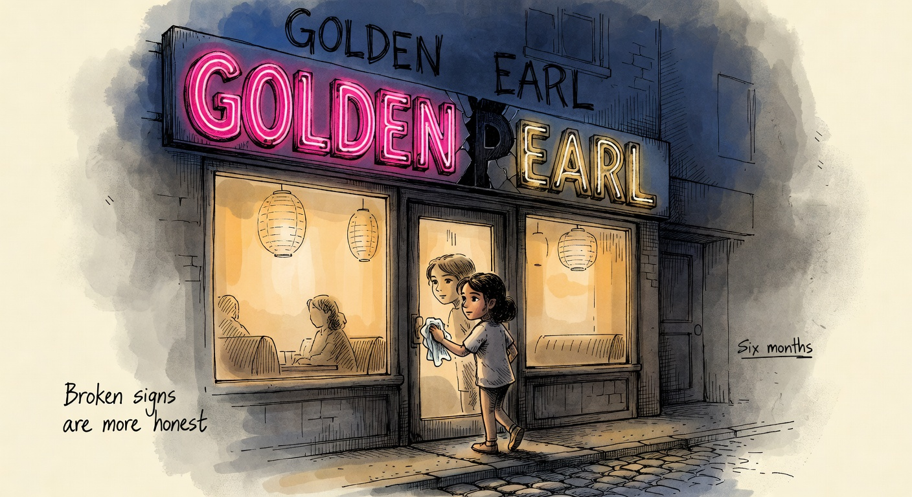
She moved to booth three. The vinyl was cracked along the seat edge and someone had tried to fix it with electrical tape that was now curling at the corners like old wallpaper. Two of the hanging lanterns above the service station were out. The mural of koi fish on the back wall needed repainting — one fish had faded to a pale smudge, a ghost fish swimming upstream through plaster.
Her father was at the register, phone wedged between his ear and shoulder, pen tapping a stack of documents. "Right, but the square footage doesn't account for the — no, the kitchen is separate, it's — hold on." He covered the mouthpiece. "Maia, booth four needs water."
"I know."
"And check if Mrs. Pratt wants her usual tea."
"I know, Dad."
Henry gave her the look — the one that meant he was trying to parent and manage and grieve all at the same time and none of them were going well. She softened. Grabbed the water pitcher.
Mrs. Lucinda Pratt sat in booth four the way she sat in booth four every Thursday: upright, reading glasses on their beaded chain, menu untouched because she'd been ordering the same thing for fifteen years. Maia filled her water glass.
"Good evening, Mrs. Pratt."
"Good evening, Maia." The words arrived pressed and folded, like linen. "Your grandmother's jasmine is blooming on the windowsill outside. Did you notice?"
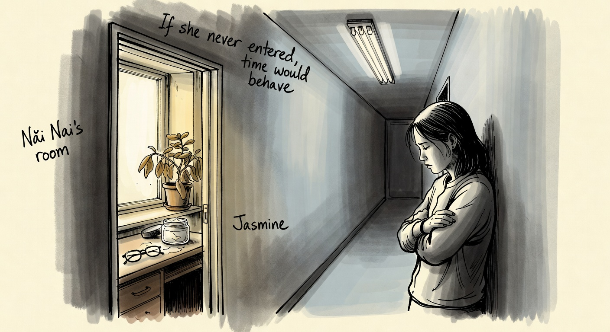
Maia hadn't. "I'll look later."
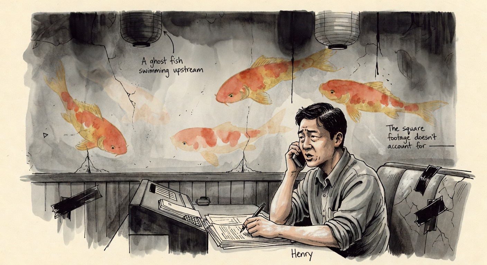
"You should look now. Jasmine doesn't wait."
Maia almost smiled. Mrs. Pratt had been a high school English teacher for thirty-five years and still spoke to everyone as if they were about to be quizzed. She delivered Mrs. Pratt's tea order to Uncle Dao at the service station and lingered there a moment, watching him work.
Dao moved through the restaurant like water through a familiar channel — no wasted motion, no hesitation, the black apron pressed so crisp it could have stood up on its own. He was carrying two plates of garlic string beans to the Nguyen family's table and somehow also tracking the front door, the kitchen window, and Maia's father's rising voice on the phone. He set the plates down, said something that made the youngest Nguyen kid laugh, and was back at the station before Maia could blink.
"Uncle Dao, Mrs. Pratt wants the oolong."
"Already steeping, little fish." He didn't look up. He was arranging fortune cookies on a small tray, and something about the way he did it snagged her attention — not rushed, not casual, but deliberate. He held one cookie up to the pendant light, squinted at it, set it aside. Picked up another. Held it to the light too.
Weird. But Uncle Dao was Uncle Dao. He had his ways.
The front door chimed and Theo came in wearing his Celtics cap pulled low, backpack still on, which meant he'd come straight from his mom's. He slid into the corner booth — their booth — and Maia was there in four steps.
"You're late."
"I'm not late, I'm — I mean, I didn't say I'd be here at a specific —" He trailed off, reset. "Hi."
"Hi." She sat across from him. "Congee?"
"Yeah." He pulled his cap lower. "Extra scallions."
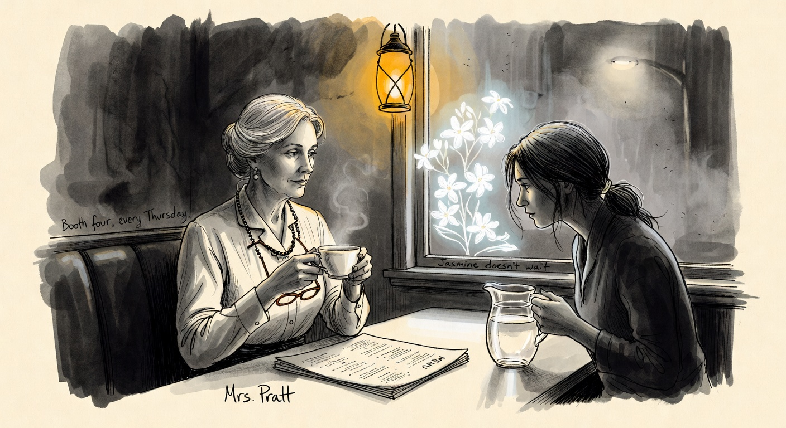
She shouted the order toward the kitchen, which was how things worked at Golden Pearl — you shouted, and Mr. Fong either heard you or he didn't, and either way the food came out right because Mr. Fong had been cooking the same menu since before Maia was born. Theo unzipped his backpack and pulled out a battered paperback, then put it back, then pulled it out again. His hands needed a project. He started stacking sugar packets into a small wall.
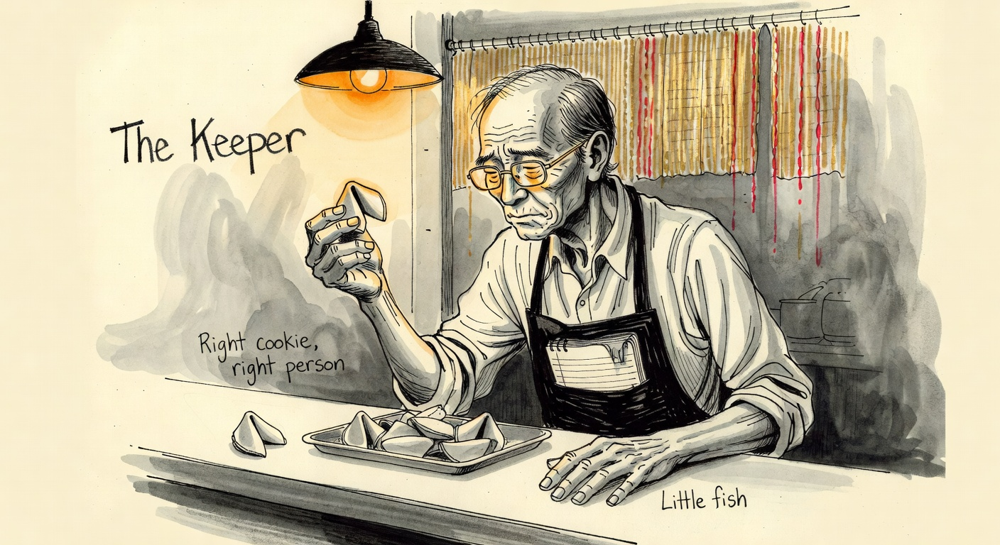
"How's your dad's place?" Maia asked.
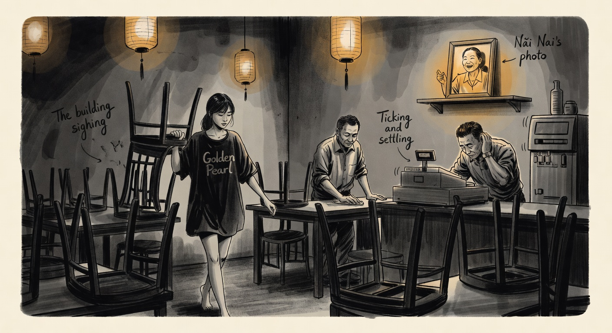
The sugar wall wobbled. "Fine. It's fine. He bought a couch. It's leather." Theo said this as though leather couches were a species of moral failure. "It smells like a shoe store."
"Fancy."
"It's not fancy, it's — I don't know. It's a couch." He added another sugar packet. The wall held.
Maia watched him build. Theo had been coming to Golden Pearl since he was three, back when his mom and Nǎi Nai used to drink tea together after the dinner rush and Theo would fall asleep on the booth seat with his shoes off. Nǎi Nai used to greet him in Cantonese — gam yat ho tin, today the sky is good to us — and ruffle his curly hair until he giggled. He'd been one of her people. Everyone at Golden Pearl had been one of her people.
Maia glanced at the register where Nǎi Nai's photo sat on the shelf — a snapshot from ten years ago, her grandmother laughing at something off-camera, one hand raised as if conducting an invisible orchestra. When no one was looking, Maia sometimes talked to it. Small things. How school went. What Mr. Fong burned that day. The conversations were brief and one-sided and she would have died before admitting to them.
The congee arrived. Theo ate without tasting it, which Maia noted but didn't mention. His sugar-packet wall grew to six levels. Then Uncle Dao appeared with the check.
He set the small black tray on the table and on it, beside the receipt, a single fortune cookie on a white saucer. Maia almost missed it — almost — but something in Dao's hand made her look. He placed the cookie the way you'd place a glass ornament on a high shelf. Precise. Careful. His fingers held it a beat longer than necessary before letting go.
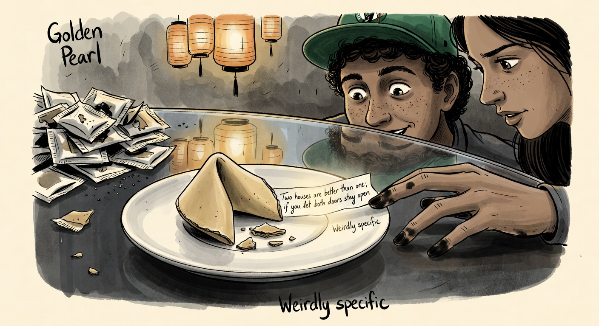
Then he was gone, gliding toward the kitchen.
Theo reached for the cookie and cracked it open. The shell split unevenly, one half crumbling, the other holding its shape — and the slip of paper uncurled on the saucer like a small white tongue.
He read it aloud: "'Two houses are better than one if you let both doors stay open.'"
A beat.
Theo laughed. "That's weirdly specific for a fortune cookie." He flicked the paper toward Maia. "Usually it's like, 'A journey of a thousand miles starts with a single step.' This one sounds like a real estate ad."
Maia picked up the slip. The paper was thicker than she expected. The ink was dark, the letters small and neat, not printed but — she held it closer — almost handwritten. Huh.
"Keep it," Theo said, shouldering his backpack. "Maybe it's about your dad selling the place."
"He's not selling the place."
"He's always on the phone with that real estate lady."
"He's not selling it." She folded the fortune slip into a small square and tucked it into her jeans pocket. "Text me when you get home."
Theo waved from the door. The chime rang. He was gone.
Maia helped Dao flip the chairs onto the tables at closing. Her father counted the register, mouthing numbers. The restaurant ticked and settled around them — the ice machine's shudder, the walk-in's hum, the particular creak of the floorboard near booth six that Nǎi Nai used to say was the building sighing.
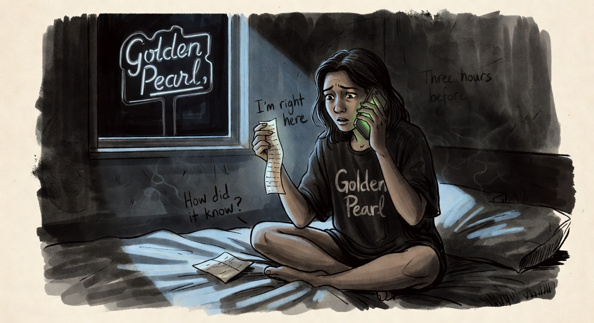
Upstairs, she brushed her teeth, changed into the old Golden Pearl t-shirt she slept in, and sat on her bed with the fortune slip unfolded on her knee. Two houses are better than one if you let both doors stay open. She turned it over. Blank on the back. No lucky numbers, no learn-Chinese word of the day. Just the sentence, in that small neat hand.
Her phone buzzed at 10:07.
Theo's name. She answered.
He was crying — not the loud kind but the airless kind, the kind where the throat closes and the words have to squeeze through sideways. "They told me," he said. "My parents. They just — they sat me down and they told me."
Maia's hand tightened on the phone. "Told you what?"
"They're separating. They said — my mom said —" A wet, shaking breath. "She said I'd have two homes now and that both doors would always be open for me. She said exactly — Maia, she said almost exactly —"
He couldn't finish.
Maia pulled the fortune slip off her knee and held it up to the light from her window. The ink was so dark. The letters so sure of themselves.
Three hours. The cookie had known three hours before Theo did.
"I'm here," she said into the phone, because it was the only true thing she had. "Theo, I'm right here."
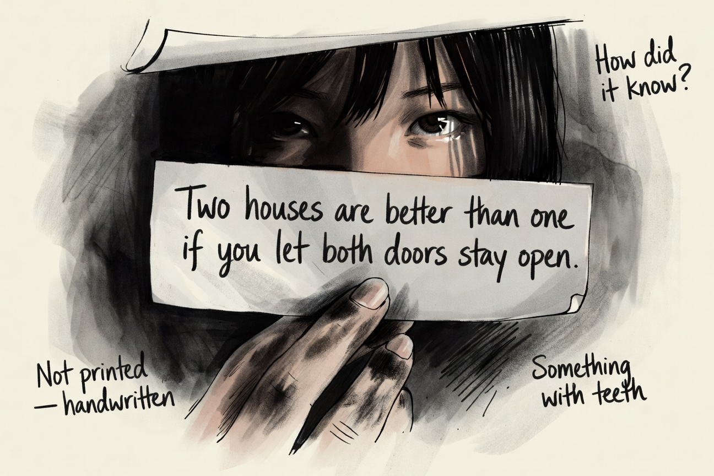
But her eyes stayed on the slip of paper, and the question that would keep her awake until morning was already taking shape — not grief, not yet, but something sharper. Something with teeth.
How did it know?
Uneven Edges
Five fortune cookies lined up on her desk like a police lineup.
Maia had stolen them from the kitchen supply before school — slipped downstairs at 6:40 AM while her father was still asleep and the restaurant held that particular early-morning hush, the chairs still upturned on tables like a herd of strange animals frozen mid-stretch. The cookies lived in a plastic bin on the shelf above the prep sink, no label, no brand name, just a white bin with a blue lid that said COOKIES in Nǎi Nai's handwriting on a strip of masking tape. Maia grabbed five, stuffed them in her jacket pockets, and was back upstairs before the coffee maker finished gurgling.
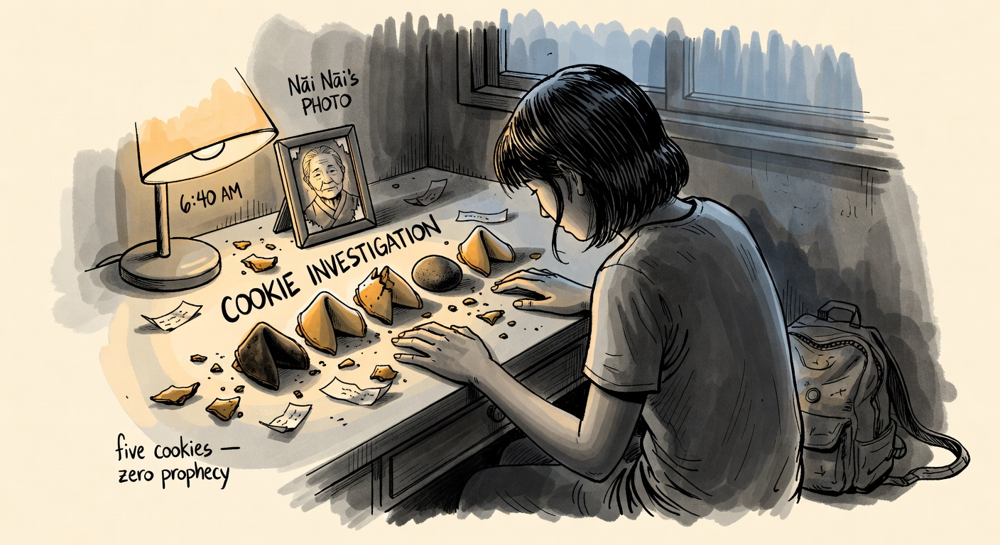
Now it was 4:15 PM and she'd been staring at them since she got home. Homework untouched. Backpack still zipped. The fortune slip from last night sat propped against Nǎi Nai's framed photo on the desk — two houses are better than one — and the five cookies fanned out before it like an offering.
They were wrong. Not wrong-wrong, but wrong in the way that a handmade thing is always slightly wrong compared to the machine version. Maia picked up the first one and turned it under the desk lamp. The fold was uneven, one wing fatter than the other, the color a shade darker than the cookie beside it — more amber than gold. No cellophane wrapper. No plastic sleeve with a factory stamp or a best-by date or a tiny "MADE IN USA" in letters you needed a magnifying glass to read. She'd eaten fortune cookies at other restaurants. Those came in crinkly wrappers with red pagodas printed on them and tasted like sweetened cardboard. These were bare. Naked little half-moons, each one slightly different, like faces in a family.
She lined them up again. Cookie one: darker, lopsided fold. Cookie two: lighter, almost perfectly shaped but with a hairline crack along the spine. Cookie three: the smallest, compact and dense, and when she tapped it against the desk it made a sound like knocking on stone. She tapped it again. Solid. She tried to crack it with her fingers and it wouldn't give — she had to press both thumbs into the fold and really push before it split with a dry snap.
The fortune inside read: Patience is a river.
Maia stared at it. Patience is a river. She turned it over. Nothing. She held it up to the lamp the way she'd seen Uncle Dao hold cookies to the pendant light, and the paper was thin, ordinary, the ink a faded blue. The handwriting — she compared it to the fortune from Theo's cookie, still propped against the photo — was different. Looser. Almost sloppy. Like someone had written it in a hurry, or like it didn't matter as much.
She cracked the second cookie. A smile is the shortest distance between two people. Generic. Fortune-cookie-calendar generic. The kind of thing you'd find printed on a tea bag tag.
Third cookie: Still water reflects the stars.
Fourth: The wise man plants shade he will never sit in.
"Come on," Maia said to the desk. She cracked the fifth cookie — the lopsided dark one — and unrolled the slip with her fingernail.
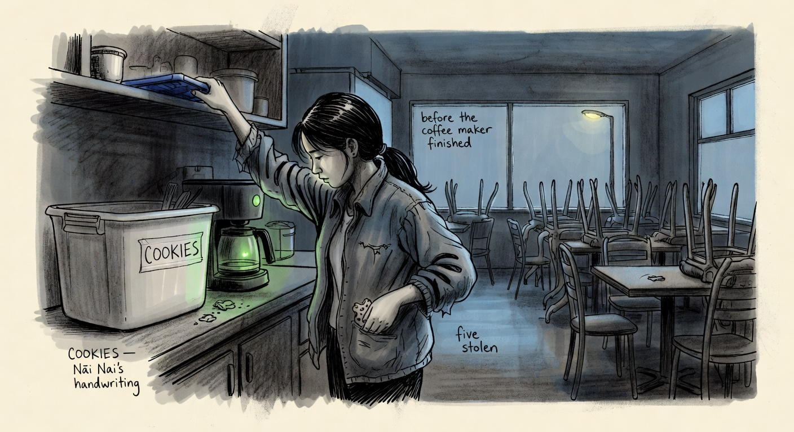
Knowledge without action is a locked door.
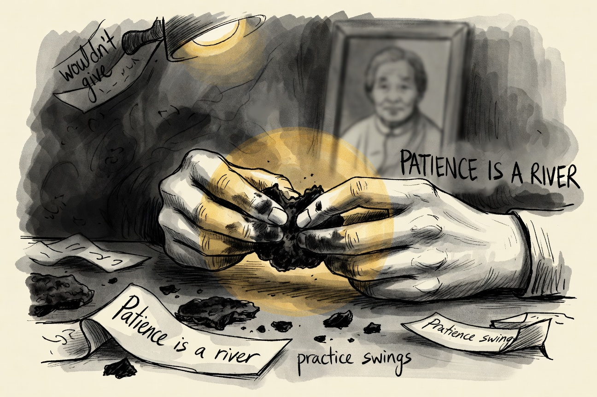
Five cookies. Five proverbs. Zero prophecy. She swept the crumbled shells to the side and sat back in her chair, arms crossed. The fragments caught the lamplight and threw long golden shadows across the desk, across Nǎi Nai's photo, across the one fortune that still felt like it meant something.
Two houses are better than one if you let both doors stay open.
That one was different. She could feel it was different — the paper thicker, the ink darker, the handwriting small and precise, each letter placed with the care of someone threading a needle. The five bland fortunes looked like rough drafts by comparison. Practice swings. Filler.
So not every cookie was magic. Only some of them. And the magic ones were — what? Better made? Chosen?
She needed more information.
Mr. Fong was chopping ginger when Maia pushed through the kitchen's swinging door, and the smell hit her like a wall — garlic, peanut oil, the sharp green bite of scallions. He was a compact man with forearms like bridge cables who had been cooking at Golden Pearl since before Maia could hold chopsticks, and his opinion on most non-cooking matters could be summarized as a shrug.
"Mr. Fong, who makes the fortune cookies?"
Shrug.
"Seriously. Do we order them? Is there a supplier?"
He scraped ginger off the cutting board into a steel bowl without looking up. "Your nǎi nai handled the cookies. Always did. They show up in boxes in the back office, I put them in the bin." He pointed the knife toward the shelf. "That's it."
"But who makes them? Where do they come from?"
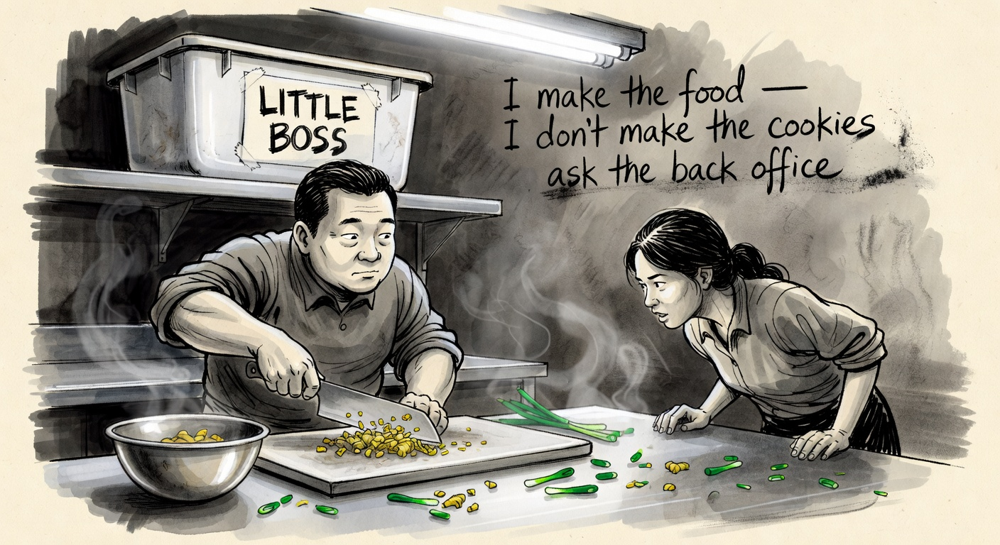
"Little boss." He finally looked at her, the knife pausing mid-air. "I make the food. I don't make the cookies. Your grandmother made the cookies, or she got them from somewhere, and she never told me which because I never asked because I was busy making the food." He returned to the ginger. "You want to know about cookies, ask the back office."
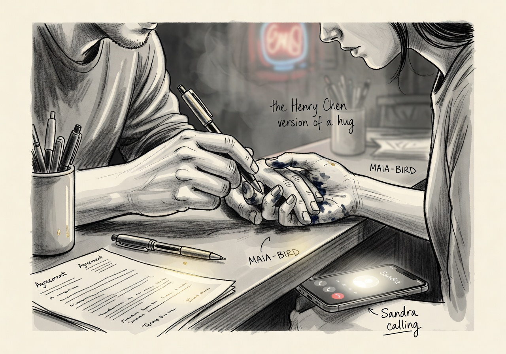
The back office. Nǎi Nai's room.
Maia's stomach did a small, cold flip. She wasn't ready for that. Not yet.
"What about Uncle Dao? Does he know?"
"Ask Uncle Dao."
"He's not here until five."
"Then ask him at five." Mr. Fong swept the ginger into the wok and the kitchen erupted in a sizzle that ended the conversation.
Her father was at the register when she came back through, signing papers with a pen that kept dying. He'd click it, scribble, click it again, hold it up to the light, shake it — a whole frustrated choreography that Maia recognized as the Henry Chen Method of Dealing With Problems, which was to focus very hard on the small fixable thing so you didn't have to look at the large unfixable one.
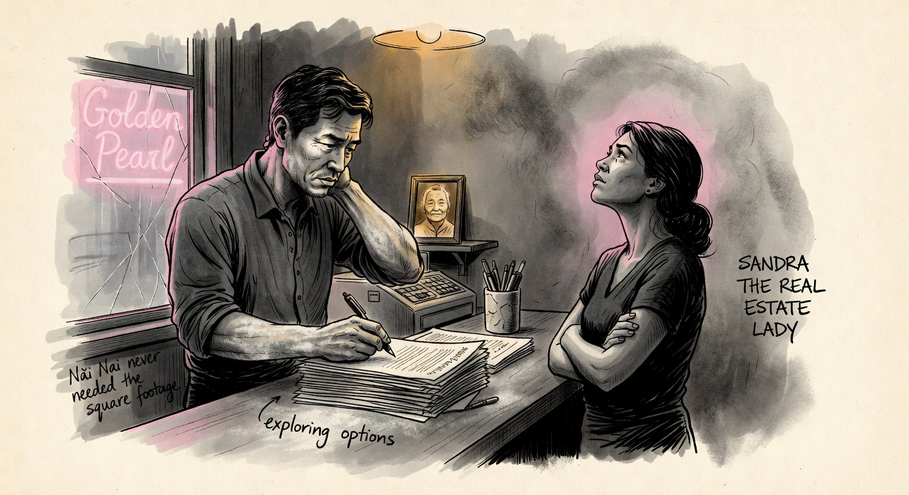
"Dad, do you know where the fortune cookies come from?"
"Hmm?" He didn't look up. Click. Scribble. Click.
"The fortune cookies. In the bin. Who makes them?"
"Your grandmother ordered them from — somewhere. I've got the vendor files in the —" He waved vaguely toward the back office. "I'll look into it. Here's the plan: I need to get through these lease documents first, and then I have a call with Sandra at four-thirty about the appraisal, and then —"
"Sandra the real estate lady."
Henry's pen stopped. He looked at her over the papers. "Sandra the real estate consultant. We're just exploring options, kid."
"Theo said you're selling."
"Theo is eleven. I'm exploring options." He tried the pen again. Dead. He set it down with the careful restraint of a man who wanted to throw it. "Maia, I'm not — this isn't decided. Okay? Nothing's decided. I'm just trying to understand what we're working with here. Square footage, lease terms, that kind of thing."
"Nǎi Nai never needed to understand the square footage."
It landed harder than she meant it to. Henry's jaw worked — that thing he did, the muscles moving under the skin like small animals — and for a second she saw something in his face that wasn't frustration. It was the look of a man standing in a building that still smelled like his mother's hand cream, trying to convert grief into numbers because numbers didn't ambush you in the middle of a Thursday.
"I know she didn't," he said quietly.
Maia almost apologized. Instead she said, "Can I have a pen that works?"
He handed her one from the cup by the register. Their fingers touched and he gave hers a quick squeeze — clumsy, automatic, the Henry Chen version of a hug — and then his phone rang and he was back in the current, swept away by Sandra's voice tinning out of the speaker.
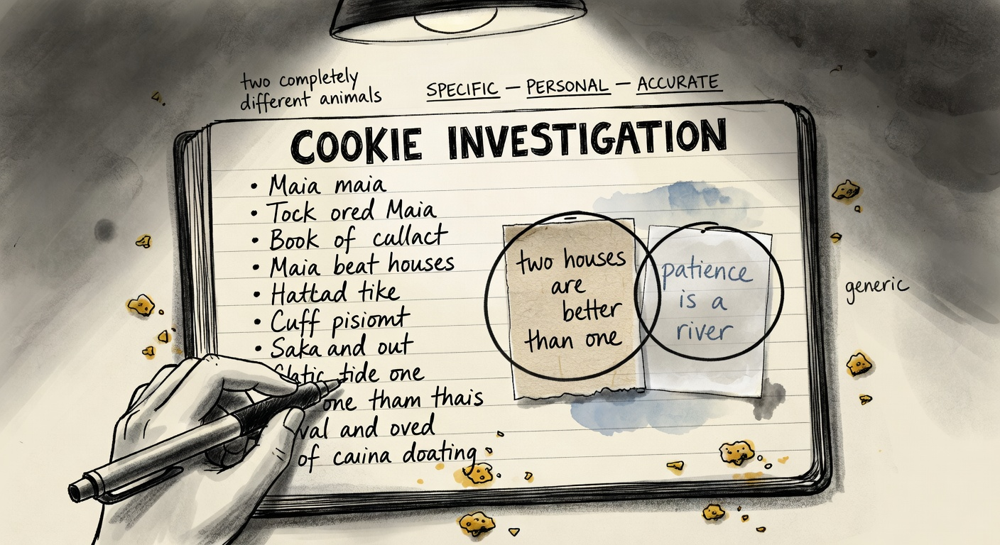
Maia went upstairs.
She sat at her desk and opened the notebook she used for math homework, flipped to a blank page, and wrote at the top in block letters: COOKIE INVESTIGATION.
Below that:
- Handmade (no wrappers, no brand, uneven shapes) - Nǎi Nai handled them personally - Kitchen staff doesn't know origin - Some fortunes = generic (patience is a river, etc.) - Theo's fortune = specific, personal, ACCURATE - Difference: paper quality? ink? handwriting?
She taped Theo's fortune slip to the page with a piece of scotch tape and drew a circle around it. Then she taped one of the bland fortunes — patience is a river — beside it and drew a circle around that too. Two circles. Two completely different animals wearing the same costume.
The crumbled cookie shells still littered her desk, golden fragments catching the lamplight. She brushed them into her palm and held them there for a moment — warm from the lamp, rough-edged, smelling faintly of vanilla and something else, something older, like the inside of a wooden drawer that hadn't been opened in years.
The stone-hard cookie — the one that had refused to crack, the one she'd had to force — its fragments were denser than the others. Darker. She pressed a piece between her fingers and it didn't crumble. It held.
She set it down next to the photo of Nǎi Nai and looked at her grandmother's face — laughing, hand raised, conducting the invisible orchestra — and felt something that wasn't grief, exactly. More like the feeling of standing in front of a locked door and hearing someone moving on the other side.
"Okay," she said to the photo. "So not all the cookies are the same. And you're the one who made them. And Uncle Dao is the one who picks which cookie goes where."
She tapped her pen against the notebook.
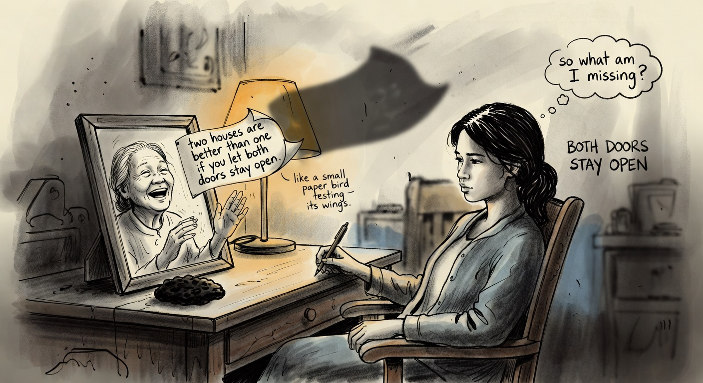
"So what am I missing?"
Nǎi Nai's photo didn't answer, but the fortune slip — two houses, both doors — caught a draft from somewhere and fluttered once against its tape, like a small paper bird testing its wings.
The Pause Before Placing
The Friday dinner rush hit Golden Pearl like a wave at 6:15 — the Nguyen family first, all five of them tumbling through the door in a chaos of backpacks and winter coats, the three kids already arguing about who got to sit by the window. Then Mr. Salazar, slow and deliberate, his cane tapping a rhythm on the tile that Maia could have set a metronome to. Then a couple she didn't recognize, then two more regulars, then a group of college students who took the big round table and immediately started photographing the menu like it was a museum exhibit.
Maia stationed herself behind the beaded curtain that separated the kitchen doorway from the dining room. She'd dragged over the step stool Mr. Fong used to reach the high shelves and positioned it so she could see the entire floor through the hanging strands of wooden beads — red, gold, red, gold — without being obvious about it. She had her math notebook open on her knees, pen ready. Page headed: UNCLE DAO — OBSERVATION LOG.
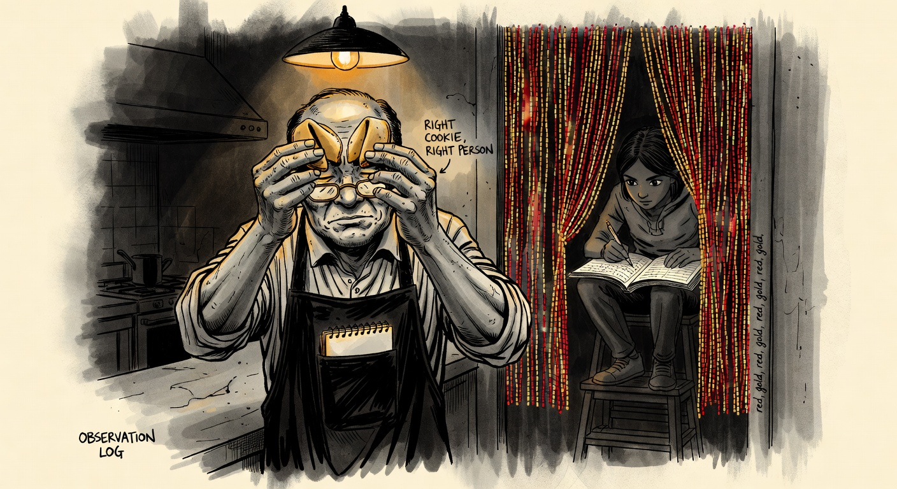
She'd been watching him for forty minutes.
The thing about Uncle Dao was that he moved through the restaurant the way water moves through a pipe — smooth, unhurried, finding every gap. He never bumped a chair. Never reached across a customer. His tray stayed level even when he pivoted between the Nguyen kids' flailing arms and Mr. Salazar's cane, and his face held the same expression it always held: patient, present, somewhere between a librarian and a monk.
But the cookies. The cookies were where he changed.
Maia watched him prepare the check for the couple at table six. He pulled the leather billfold from his apron, slipped the receipt inside, and then — the pause. He reached into the front pocket of his apron where the cookies lived, three or four at a time, and pulled out two. Held them side by side. Tilted them toward the pendant light above the service station.
He was reading something. Maia leaned forward on the stool, the beads clicking softly against her shoulder. Dao's eyes, behind those wire-rimmed glasses, narrowed at the base of each cookie where the fold met — the fattest part, where a tiny mark might hide. He turned one cookie a quarter rotation. Squinted. Then put it back in his apron and placed the other on the saucer with the check.
Decisive. Like a pharmacist choosing between two pills.
Maia wrote: Holds 2 cookies to light. Checks something on wrapper?? Picks ONE. Puts other back.
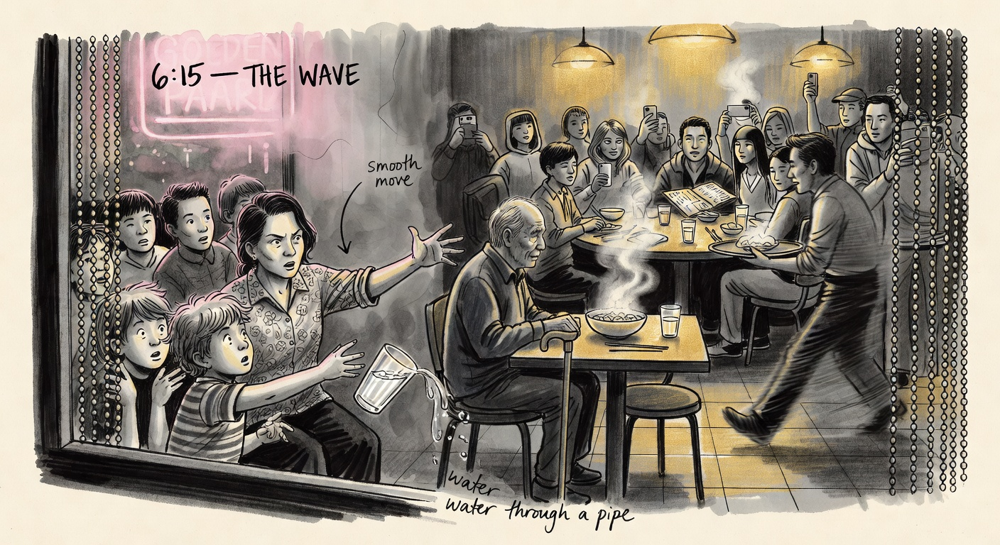
She underlined checks something twice.
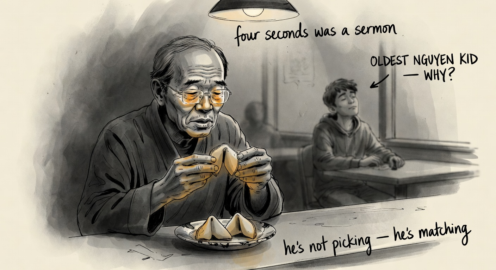
The Nguyen family was next. Mrs. Nguyen was trying to get her youngest to eat broccoli by pretending the florets were tiny trees in a dinosaur forest, which was working until the middle kid knocked over his water glass and the oldest said "smooth move" in a voice so perfectly teenage that Maia almost laughed out loud. Mr. Nguyen mopped the spill with napkins while Mrs. Nguyen caught Uncle Dao's eye and mouthed sorry, and Dao just produced a fresh glass of water from nowhere, like a magic trick, and set it down without breaking stride.
When their check came, Dao pulled out three cookies — one for each kid, none for the parents, which Maia noted was interesting — and this time the selection process was faster. He barely glanced at the first two before placing them. But the third one, the one for the oldest Nguyen kid, he held up to the light for a full four seconds. Turned it. Checked whatever he was checking. Put it down.
Four seconds didn't sound like much. But in the middle of a dinner rush, with six tables waiting and Mr. Fong banging the pickup bell, four seconds was a sermon.
Oldest Nguyen kid gets special cookie, Maia wrote. Why?
Mr. Salazar finished his soup — wonton, same as every Friday, no garnish, extra broth — and when Dao brought the check, there was no cookie on the saucer at all. Just the receipt and a single wrapped peppermint. Mr. Salazar pocketed the mint, left his cash under the saucer, and tapped his way out without a word. The whole transaction took maybe thirty seconds, and it had the feel of something rehearsed over years, a duet both men knew by heart.
No cookie for Mr. Salazar. EVER? Or just tonight?
Maia was so focused on her notebook that she almost missed Mrs. Pratt.
Booth four. Thursday was her usual night, but here she was on a Friday — same pressed blouse, same low chignon, same reading glasses on the beaded chain. She sat with her back straight and her hands folded on the table and ordered without looking at the menu: hot tea, steamed fish, white rice, no dessert. Uncle Dao wrote nothing down. He never did, for her.
Maia watched him prepare Mrs. Pratt's check with a kind of ceremony that was different from the others. He stood at the service station for nearly ten seconds, three cookies fanned in his large hands like a card player considering his options. He held each one to the light. The first went back. The second went back. The third — he brought it close to his glasses, tilting it so the pendant lamp caught whatever mark lived at its base, and something crossed his face. Not a smile. Not a frown. Something private and careful, like a man reading a letter he'd already read many times.
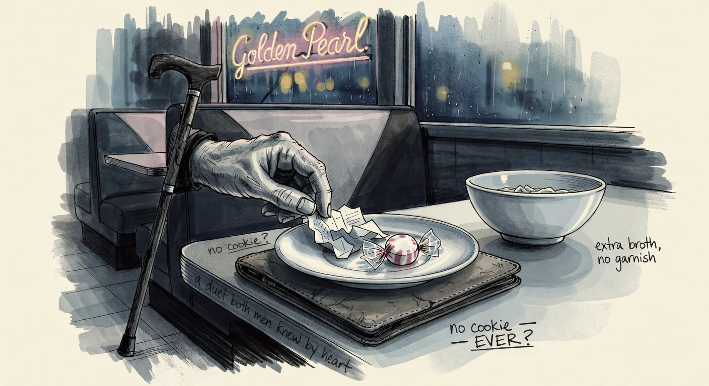
He placed it on the saucer.
Maia was off the stool before she'd decided to move. She crossed the dining room in six quick steps, intercepting Dao halfway between the service station and booth four, and her hand shot out and plucked the cookie right off the saucer on his tray.
"What's on this one?" She turned it under the nearest light, looking for the mark she knew was there. "There's something on the bottom, isn't there? Some kind of —"
"Little fish." Dao's voice was quiet but his hand was already there, closing gently over hers, over the cookie. His fingers were warm and rough and enormously careful, the way you'd hold a bird that had flown into a window. "That one's not for you."
"But I just want to see —"
"Not for you." He lifted the cookie from her palm with the same deliberate precision he used for everything and set it back on the saucer. His eyes met hers through the wire-rimmed glasses, and for a half-second she saw something in them — not anger, not even annoyance, but a kind of gentle alarm, like she'd wandered too close to the edge of something.
Then it was gone. He smiled — that rare, face-transforming smile — and tapped the end of her nose with one finger.
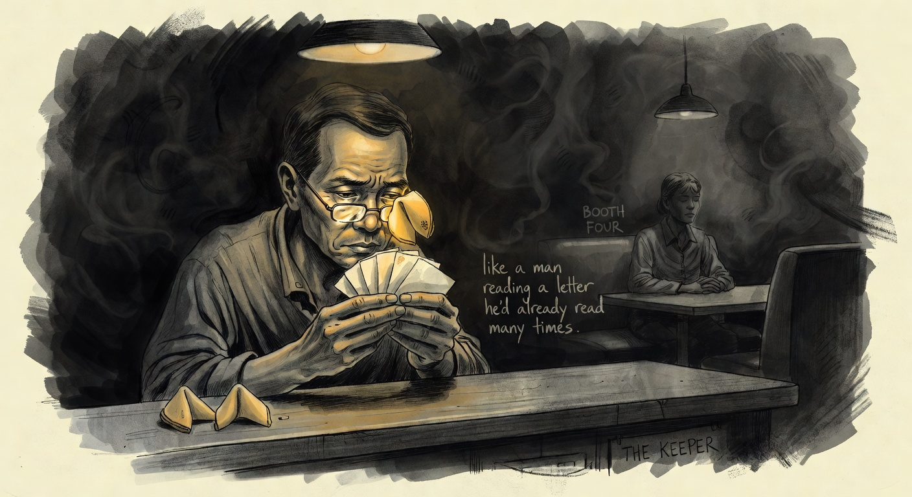
"You want a cookie, I give you a cookie. After dinner. With ice cream, even. But this one goes to the lady in booth four, okay? She's been waiting."
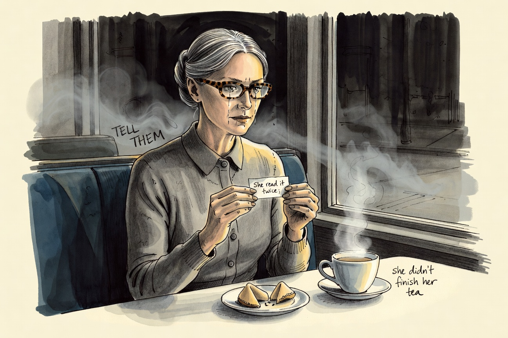
"Waiting for what?"
But Dao was already moving, tray balanced, weaving between tables with that water-through-pipes grace, and by the time he set the check in front of Mrs. Pratt his face had returned to its usual patient stillness, as if the entire exchange had never happened.
Maia stood in the middle of the dining room, hand still half-open where the cookie had been, and felt the shape of the question she couldn't yet ask pressing against the inside of her teeth like a word in a language she almost spoke.
She went back to the beaded curtain. Sat on the stool. Wrote: He said she's been WAITING. Waiting for a cookie? For THAT cookie?
In booth four, Mrs. Pratt cracked open the cookie, unrolled the fortune, and went very still. She read it twice. Then she folded it into her purse, set her glasses on the table, and looked out the window at something Maia couldn't see.
She didn't finish her tea.
The rush thinned out around eight. Maia helped bus tables — her usual Friday contribution, which Henry appreciated and Dao tolerated with the resigned patience of a man who'd learned that arguing with a Chen woman was structurally pointless. She stacked plates, wiped down vinyl, refilled the soy sauce bottles from the big jug under the counter. Normal things. Grounding things. Her hands knew this work even when her mind was three rooms away, turning the image of Dao's hands in the lamplight like a photograph she was trying to develop.
She was wiping down the window booth when she saw the girl.
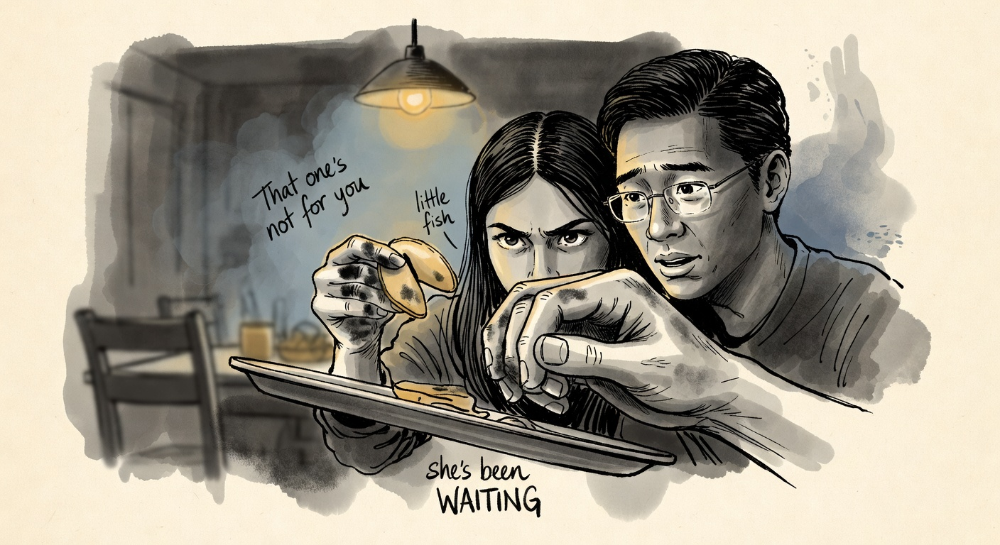
Outside, on the sidewalk, maybe ten feet from the glass. Maia's age or close to it — lean, sharp-boned, dark skin, hair cropped close. An army-green jacket three sizes too big, zipped to the chin despite the mild evening. She was holding a library book against her chest with both arms, and she was looking through the window at the restaurant's interior with an expression Maia couldn't quite name.
Not hunger, exactly. Not longing. Something more architectural — like she was studying the structure of the warmth, trying to understand how it was built.
Maia raised a hand. Half-wave, half-question.
The girl's eyes snapped to hers. For one second they looked at each other through the glass — Maia inside, cloth in hand, the restaurant's amber light pooling around her; the girl outside, book clutched tight, the streetlight turning her jacket the color of old moss.
Then the girl turned and walked away. Not fast, not slow. Deliberate. The way you leave a place you've already decided isn't yours.
Maia pressed her palm flat against the window where the girl's reflection had been. The glass was cool. Outside, the sidewalk was empty, and the Golden Pearl sign buzzed its pink-and-gold hum into the dark, advertising warmth to no one.
She went back to the beaded curtain and added one more line to the observation log:
Girl outside. Looked in. Didn't come in. Why not?
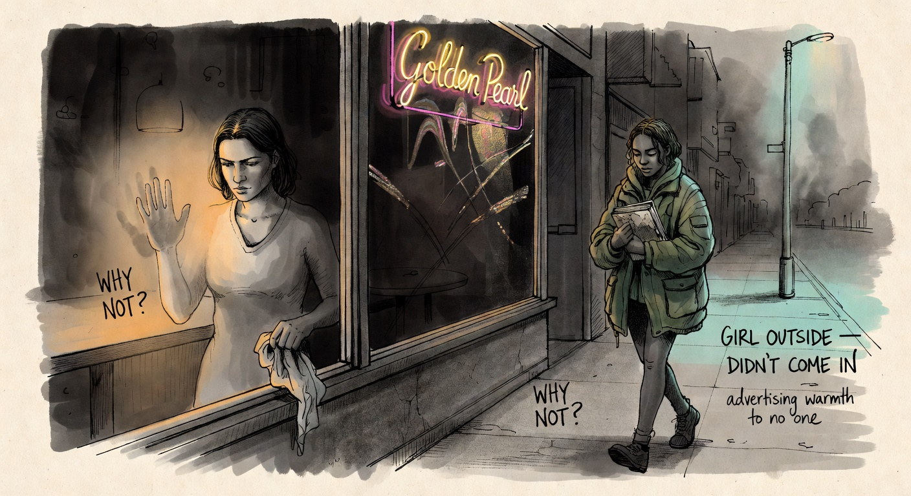
Below it, almost as an afterthought:
Uncle Dao knows exactly what he's doing. He's not picking cookies. He's matching them.
Two Houses
Theo's backpack hit the booth seat before Theo did.
It was Saturday, a little after noon, and Golden Pearl was running its skeleton lunch — Mr. Fong in the kitchen doing prep for the evening, Henry somewhere upstairs arguing with a spreadsheet, Uncle Dao not due for another four hours. The restaurant felt different without the dinner crowd: bigger, quieter, the way a stage looks with the house lights up. Dust moved through the slants of sun from the front windows. The ceiling fan ticked like a slow clock.
Maia had been sitting at the counter with her math notebook — the one that hadn't seen actual math in a week — when the door opened and Theo walked in wearing yesterday's clothes.
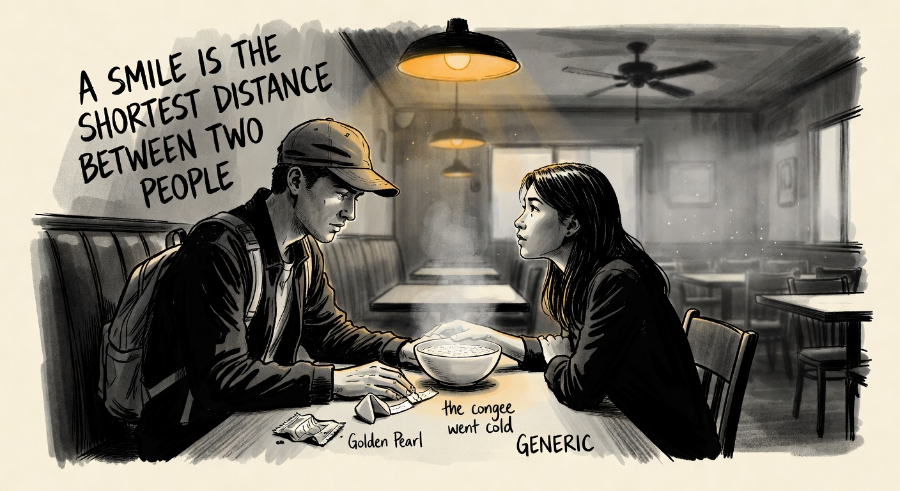
She knew they were yesterday's clothes because the hoodie had the same hot-sauce stain on the cuff from Thursday's dinner, and Theo was the kind of person who changed his shirt every morning like it was a sacrament. He slid into the corner booth, backpack still on one shoulder, and sat there with his hands flat on the table, staring at nothing.
"Hey," Maia said, already moving toward him.
"Hey." His voice was the voice of someone who'd been awake too long in a room that smelled wrong.
She sat across from him. He didn't look up. His eyes had that flat quality she'd seen once before, on a kid at school who'd come back after his dog died — not red, not wet, just turned off. Like someone had found the dimmer switch behind his face and dialed it all the way down.
"You want food?"
"Sure."
"Congee? Mr. Fong's got the pot going."
"Sure."
She went to the kitchen and ladled out a bowl — the good congee, the one with the century egg and crispy shallots that Theo usually ate so fast he burned the roof of his mouth. She set it in front of him. He picked up the spoon. Put it in the bowl. Stirred. Lifted a spoonful, blew on it, set it back down.
The congee sat there between them, untouched, the overhead light turning it into a small pale moon in its white bowl.
"First night?" Maia asked.
Theo nodded. His fingers found a sugar packet from the dispenser and started folding it — corner to corner, corner to corner — but the construction went nowhere. No tower. No bridge. Just the same fold, over and over, like his hands were buffering.
"Dad's apartment is on Hennessey Street," he said. "Above the laundromat. It smells like — I mean, it's fine. It's clean. He bought new sheets." A pause. The sugar packet got another fold. "They're blue. He kept saying how blue they were, like the color was the important part."
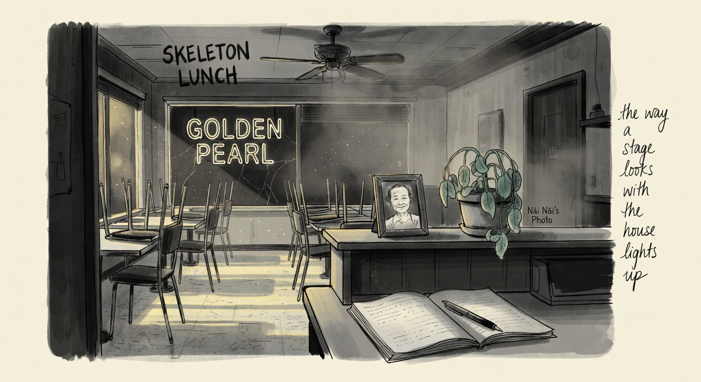
Maia didn't say anything. She'd learned from Nǎi Nai that sometimes the best thing you could do for a person was shut up and let the silence hold space for whatever was trying to come out.
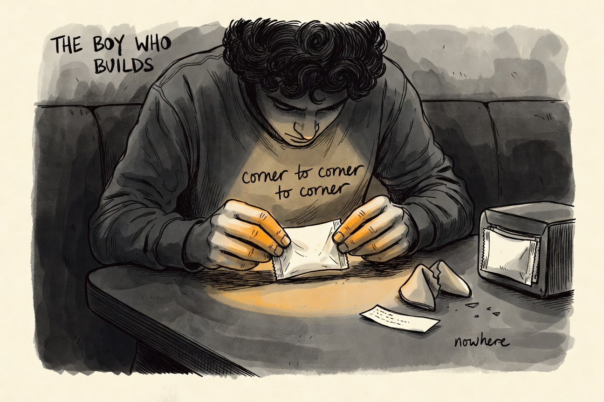
"The mattress is on the floor," Theo said. "He doesn't have a bed frame yet. He said we'd go pick one out together, like it's — like it's a project. Like building furniture is going to make it —" He stopped. Folded the sugar packet again. "I don't know. Forget it."
"I'm not forgetting it."
His eyes came up to hers for the first time, and there it was — not sadness exactly, but a kind of bewilderment, as if the world had rearranged itself overnight and nobody had updated him on the new layout.
"I kept waking up," he said. "Every time the dryer downstairs started a new cycle. It shakes the floor."
Maia reached across the table and put her hand on top of his, the one holding the mangled sugar packet. He let her. They sat like that for a few seconds, which was long enough.
Then she had an idea.
"Wait here," she said, and went to the kitchen.
The cookies were where they always were — a cardboard box on the shelf above the rice cooker, no label, no brand, just two dozen fortune cookies nestled in wax paper like sleeping birds. She grabbed one. It felt solid and ordinary in her palm, slightly warm from the shelf's proximity to the stove. She turned it over, looking for — what? She didn't know yet. Something. The thing Uncle Dao checked when he held them to the light.
The cookie's surface was smooth, golden, unremarkable. If there was a mark, she couldn't see it in the kitchen's fluorescent glare. She grabbed a second one for comparison. They looked identical: same uneven handmade shape, same hairline crack along the fold.
She brought one back to Theo and set it on the table next to his untouched congee.
"Crack it," she said.
He looked at the cookie, then at her. Something flickered behind the flatness — not hope, exactly, but the memory of hope. The ghost of Thursday night, when a fortune cookie had known his future before he did.
"Maia —"
"Just open it."
He picked it up. Turned it in his fingers. For a second she thought he was going to hold it to the light the way Dao did, but instead he just snapped it clean in half — easy, no resistance, the cookie practically falling open — and pulled out the slip of paper.
He read it. His face didn't change.
"What's it say?"
He slid it across the table. Maia picked it up and read the tiny printed words: A smile is the shortest distance between two people.
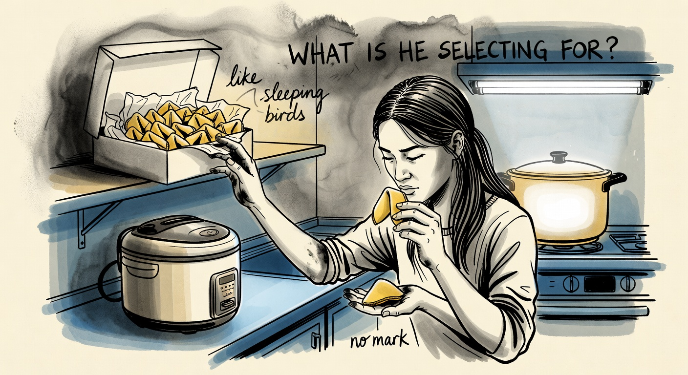
She read it again, waiting for the jolt, the recognition, the eerie precision of the first fortune. It didn't come. The words just sat there on the slip, flat and generic, the kind of thing you'd find in any cookie from any takeout bag in any city. Fortune-cookie-fortune. Filler.
"It's nothing," Theo said. Not angry. Worse — unsurprised. Like he'd already known the magic wouldn't come twice. He pushed the broken cookie halves to the side of the table and picked up his congee spoon again, stirring without eating.
Maia stared at the slip. A smile is the shortest distance between two people. She thought about the other fortune, the one that had arrived on Thursday like a telegram from the future: Two houses are better than one if you let both doors stay open. That one had been specific. Personal. It had known something. This one knew nothing. This one could have been written by a machine.
So what made the difference?
She pulled her math notebook from the counter where she'd left it and flipped past the UNCLE DAO — OBSERVATION LOG to a fresh page. Wrote at the top: COOKIE CATEGORIES.
Underneath, two columns:
REAL — specific, personal, comes true GENERIC — could be anyone, means nothing
Under REAL she wrote: Theo's first fortune (Thursday). Mrs. Pratt's fortune (Friday — didn't see text but she REACTED).
Under GENERIC: Three cookies I opened at my desk (Ch. 2). Theo's second fortune (today — 'A smile is the shortest distance').
She tapped the pen against the page. The pattern was obvious even with this little data. The real ones came through Uncle Dao. The generic ones came from the box in the kitchen, grabbed at random. Dao was the filter. Dao was the one who held them to the light and chose.
But chose based on what?
"You're doing the thing," Theo said.
"What thing?"
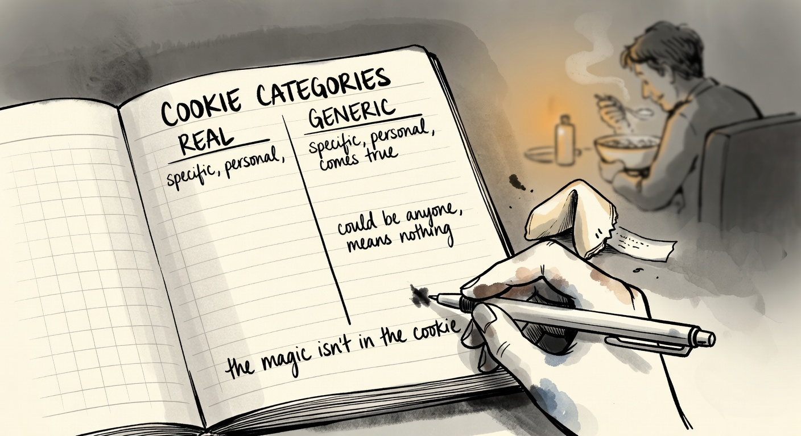
"The thing where your brain leaves the room and your body stays behind to take notes." He almost smiled. Almost. The corner of his mouth twitched and then thought better of it. "What are you writing?"
"I'm trying to figure out why some cookies are —" She stopped. She wasn't ready to explain it yet, not when the theory was still wet. "Never mind. Eat your congee."
"I'm not hungry."
"Eat it anyway. Mr. Fong made it with the good shallots."
Theo took a bite. Then another. Not because he was hungry but because Maia had asked, and because the congee was warm, and because sometimes the body knows what it needs before the heart catches up. She watched him eat and felt something loosen in her chest — not relief, but the smaller thing that comes before relief, like the first click of a lock turning.
He was going to be okay. Not today, maybe not this week, but eventually. She could see it in the way he held the spoon — careful, deliberate, like someone choosing to do a small thing well even when the big things were broken.
She went back to her notebook.
Henry found her that evening, cross-legged on her bed upstairs, the notebook open, the second cookie — the one she'd grabbed for comparison — sitting on her nightstand like evidence.
He leaned against the doorframe. He had flour on his forearms again, which meant he'd been in the kitchen trying to learn Mr. Fong's dumpling fold, which meant he was anxious, because Henry Chen stress-cooked the way other people stress-smoked.
"Hey, kid."
"Hey."
"Theo okay? I saw him leave earlier. He looked —" Henry made a vague gesture that was supposed to encompass the entire landscape of a child's pain.
"His parents told him. Thursday night."
"Yeah." Henry rubbed the back of his neck, leaving a flour streak. "His mom called me. She wanted to know if he'd been by." He paused. Came into the room. Sat on the edge of the bed, which creaked under him in a familiar way. "Listen, Maia-bird. I know things have been — I mean, with Nǎi Nai, and now Theo's family, and all of it. That's a lot for anybody. It's a lot for a grown-up, and you're —"
"I'm fine, Dad."
"You've been writing in that notebook a lot."
She closed it. Casually, she hoped. "It's for school."
"School doesn't start for three weeks."
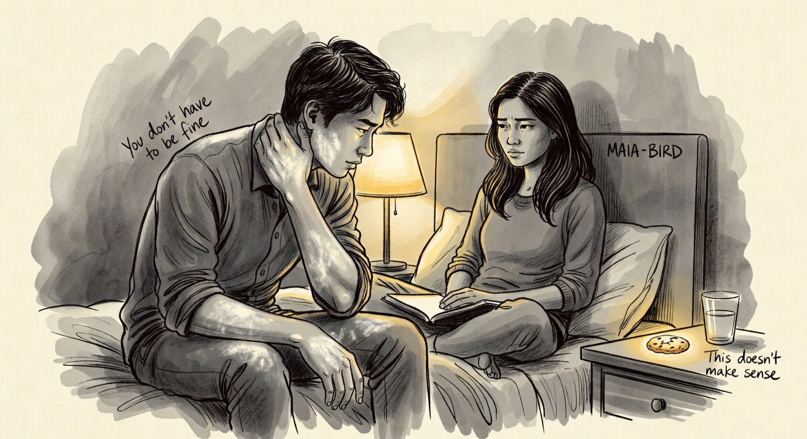
"I'm getting ahead."
Henry looked at her the way he sometimes did — like he was trying to read a menu in a language he'd studied but never quite learned. "I talked to Dr. Reeves's office. She's a counselor over on Birch Street, she works with kids, and I thought maybe —"
"Dad. I'm fine."
"You don't have to be fine."
"Okay, but I am. I'm fine. This doesn't make sense — I mean, I don't need a counselor. I'm just —" She caught herself. Rerouted. "I'm just trying to figure something out."
"Figure what out?"
The truth pressed against the back of her teeth. The cookies. The fortunes. Uncle Dao's hands in the lamplight. The shoebox of secrets she hadn't found yet but could feel waiting for her somewhere in this building, the way you can feel a word you've forgotten hovering just past the edge of your tongue.
But the investigation was hers. Hers and the restaurant's and maybe Nǎi Nai's. She wasn't ready to share it with someone who was already looking for reasons to sell the place.
"Math," she said. "Summer enrichment stuff."
Henry studied her for another moment. Then he leaned over and kissed the top of her head — quick, clumsy, his chin bumping her ear — and stood up.
"Okay. But the offer stands, Maia-bird. Whenever."
"Okay."
He left. His footsteps creaked down the stairs, and then she heard him on the phone — the real estate agent's number, she recognized the rhythm of the dial — and she turned back to her notebook.
She added a new line at the bottom of COOKIE CATEGORIES:
The real ones are CHOSEN. Uncle Dao picks them. The generic ones are just cookies. So: the magic isn't in the cookie. It's in the SELECTION. What is he selecting FOR?
She picked up the comparison cookie from her nightstand and held it to the lamp. Turned it slowly. The shell was smooth and golden and told her nothing.
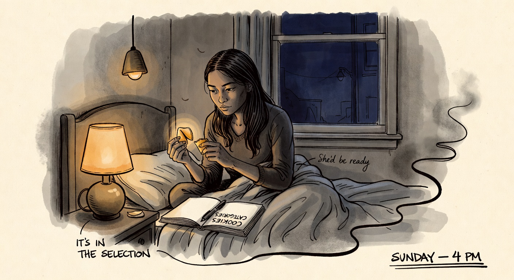
Somewhere in this restaurant, there was a system. A code. A reason why one cookie could see into a boy's future and another could only offer a smile and a platitude. And Uncle Dao had the key, tucked in his apron next to that little notebook she'd glimpsed him checking between tables.
She set the cookie down. Tomorrow was Sunday. Dao would be in at four for the early dinner prep.
She'd be ready.
The Girl Outside
The cranes on the brick wall had been fading for years.
Maia noticed them every time she left Golden Pearl through the side door — a mural painted on the old herbalist shop next door, six red-crowned cranes mid-flight against a sky that had once been blue and was now the color of dishwater. Their wings were still sharp in places, the brushstrokes visible where the wall's overhang had protected them from rain, but their bodies were going translucent. Ghost birds on ghost brick. The herbalist had closed before Maia was born. Its windows were boarded with plywood that someone had spray-painted silver, which made it look less abandoned and more like a spaceship that had given up.
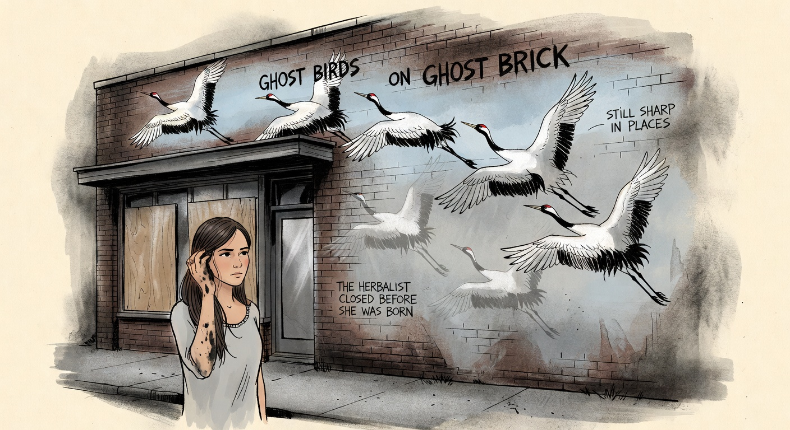
She was standing on the sidewalk outside, Sunday afternoon, killing time before Uncle Dao's four o'clock arrival, when she saw the girl again.
Same spot as Friday — across the street, half a block down, standing in front of Golden Pearl's window like someone studying a painting in a museum. Not moving to come in. Not moving to leave. Just standing there in an army-green jacket two sizes too big, holding a book against her chest with both arms.
Maia had noticed her Friday night during the dinner rush, a face in the window glass that appeared between the reflections of hanging lanterns and vanished before Maia could get a proper look. She'd mentioned it to Uncle Dao, who'd said only, "Some people need to look before they eat," which was either profound or useless, and with Dao it was hard to tell.
Now the girl was back. And Maia, who had four hours to burn and a head full of cookie theories she couldn't test yet, did the thing Nǎi Nai would have done.
She crossed the street.
The girl saw her coming. Maia watched the calculation happen in real time — the slight shift of weight to the back foot, the chin lifting, the book pressing tighter against the chest. Flight math. The girl was deciding whether to walk away.
Maia slowed down. Left three steps of sidewalk between them. Enough distance to be polite, close enough to talk without shouting.
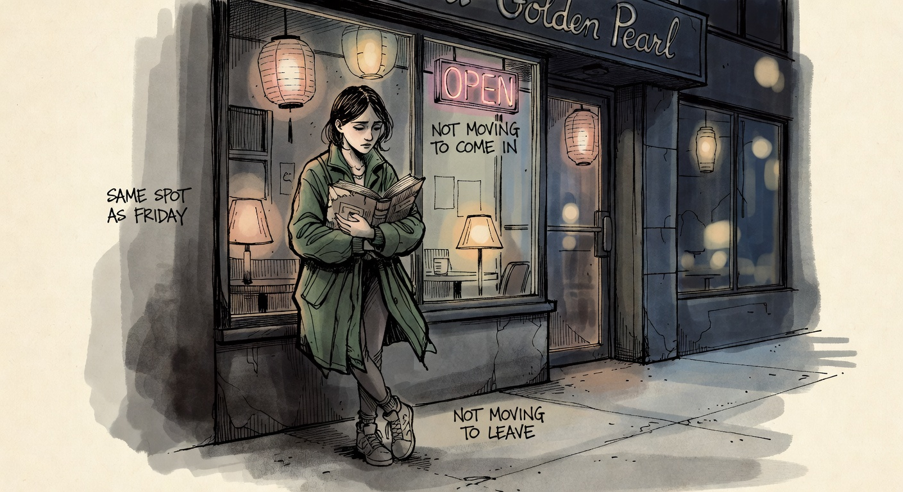
"That's our restaurant," she said, nodding toward Golden Pearl. Obvious. Stupid. But it was a door, and sometimes you just had to open one.
"I know." The girl's voice was clear and precise, each word given its full weight. "It says so on the sign."
Fair enough.
"I'm Maia. I live upstairs."
The girl looked at her for a long moment. Dark eyes, sharp cheekbones, close-cropped hair that looked like she'd cut it herself with good scissors and a steady hand. The jacket — olive drab, fraying at the cuffs, military surplus — hung past her fingertips. The book she was holding was thick, hardcover, with a photograph of a building on the front: Structures: Or Why Things Don't Fall Down.
"June," the girl said. Not offering it so much as placing it on the table between them, the way you'd set down exact change.
"You just move here?"
June's eyes flicked to the construction site at the end of the block — the half-built condo tower that had been swallowing the old parking lot since spring, its crane arm swinging slow against the sky like a mechanical bird that made the mural cranes look even more ghostly by comparison.
"Three weeks ago. The building on Mott, past the pharmacy."
"The one with the green awnings?"
"The awnings are not green. They're teal. There's a difference." She said this without smugness, the way you'd correct someone who called a load-bearing wall a partition. A fact, not a flex.
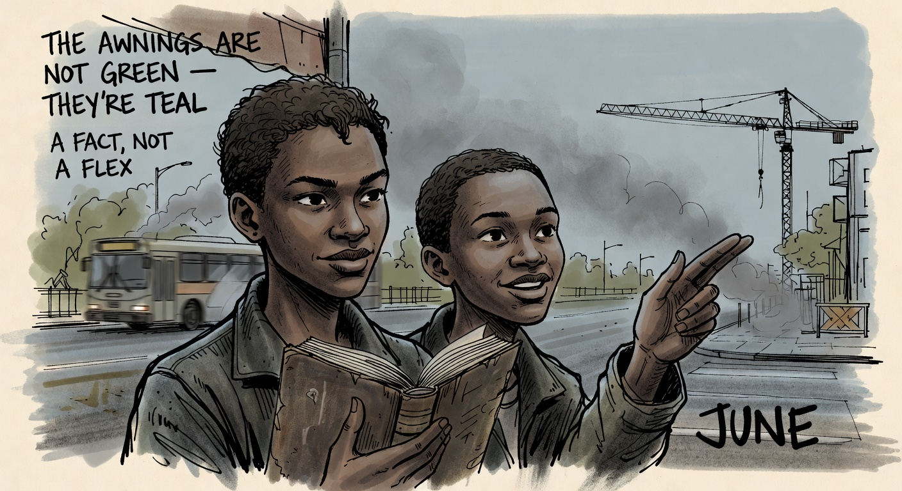
Maia almost laughed. "Okay. Teal."
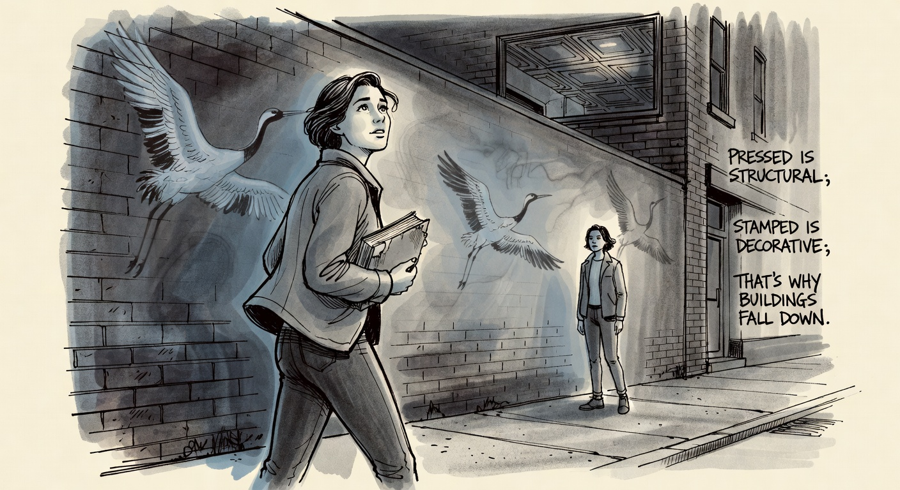
A bus went by on the main road, trailing diesel. June watched it pass, then looked back at Golden Pearl's window, where the OPEN sign buzzed its perpetual pink.
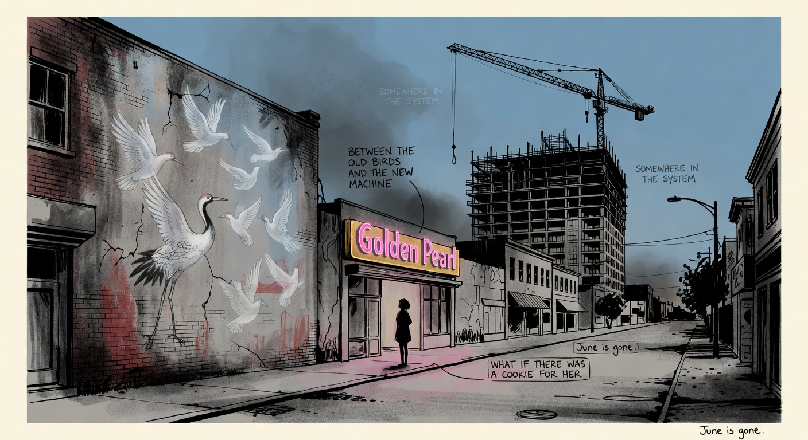
"You keep looking at the restaurant," Maia said.
"I look at buildings. That's what I do."
"You could look at it from inside. The ceiling's got these old tin tiles — they're original, I think. Nǎi Nai always said —" She stopped herself. Rerouted. "We've got good food. If you're hungry."
The shift in June was immediate. The chin came up another degree. The book pressed harder against her ribs.
"I do not eat at restaurants."
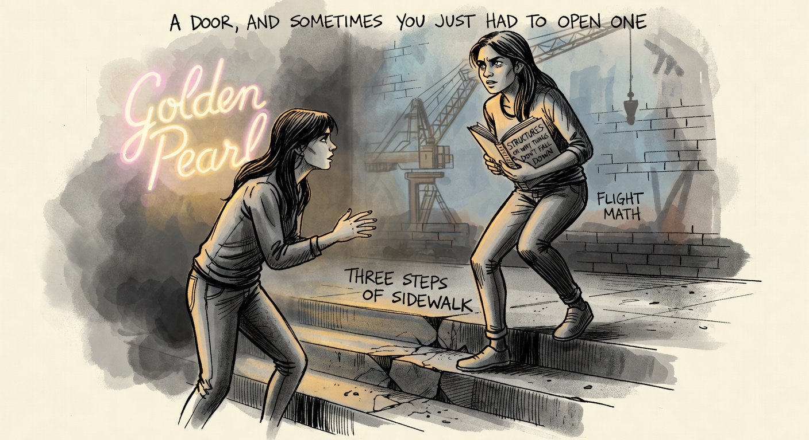
"Ever?"
"I don't like owing people."
The sentence landed with the weight of something said many times before, rehearsed until it sounded like principle instead of pain. Maia recognized the move — she had her own version. This doesn't make sense instead of I'm scared. Everybody had a sentence they hid behind.
"It's just food," Maia said. "You wouldn't owe anybody anything."
"That's what people say. And then there's a look. Or a comment. Or they tell someone, and then that person gives you a look, and —" June stopped. Adjusted her grip on the book. When she spoke again, her voice had pulled back to its formal register, the contractions gone. "I have moved four times in two years. I have learned what free costs."
Maia didn't have an answer for that. She stood there on the cracked sidewalk, the afternoon sun warm on the back of her neck, and for once her brain didn't leap three steps ahead. It just stayed where it was, in the gap between what she wanted to say and what she had the right to.
June seemed to take the silence as an ending. She shifted the book to one arm and half-turned toward the corner.
"The tin ceiling," she said, not quite looking back. "Is it pressed or stamped?"
"I don't know the difference."
"Pressed is structural. Stamped is decorative." A pause. "Most people don't know the difference. That's why buildings fall down."
And she walked. Not fast, not slow — that deliberate economy of motion, no wasted steps. She passed the boarded herbalist, passed the fading cranes, and turned the corner without looking back.
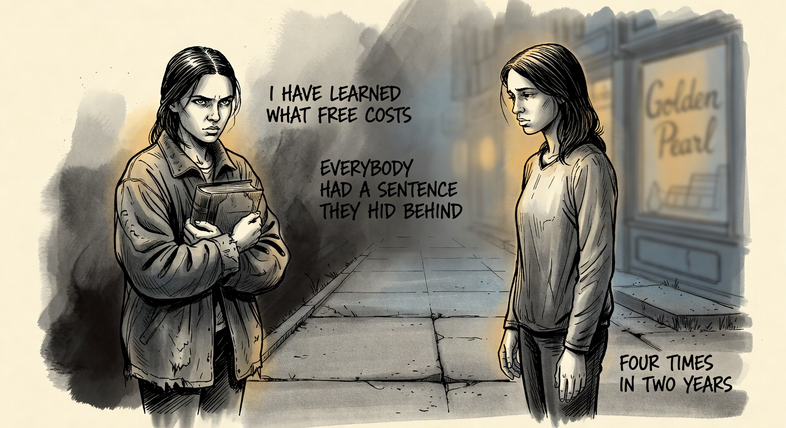
Maia stood there.
The mural cranes stared down at her from the brick, mid-flight, going nowhere. Behind her, Golden Pearl's neon sign buzzed its pink and gold into the afternoon, and the condo crane at the end of the block swung its arm in a lazy arc, and somewhere between the old birds and the new machine, a girl who didn't eat at restaurants had just told Maia more about herself in three minutes than Theo had managed in a week of knowing his parents were splitting up.
I have learned what free costs.
Maia thought about the shoebox she hadn't found yet — the one she could feel waiting somewhere in the restaurant's back rooms, full of fortunes in handwriting she'd know anywhere. She thought about the cookies in the kitchen, the ones Uncle Dao chose with such care, holding them to the light like a jeweler checking stones. She thought about Theo's first fortune, the one that had known his future. And she thought about June, standing outside the window, hungry for something she wouldn't let herself take.
What if there was a cookie for her?
The idea arrived fully formed, bright and certain, the way Maia's ideas always did — not as a question but as a plan. If the real fortunes were specific, personal, written for particular people, then somewhere in the system there might be one meant for a girl who'd moved four times in two years and carried a book about why things don't fall down. A fortune that could crack open whatever June was holding so tight against her chest. A fortune that could make her stay.
Maia could find it. She could figure out Dao's system, match the right cookie to the right person, and give June the words she needed. It would be like — not magic, exactly. More like a key. The right key for the right lock.
She was already walking back toward Golden Pearl, her mind racing ahead of her feet. Dao would be here in two hours. She'd watch him. She'd learn the code. And then she'd find June's fortune and deliver it herself.
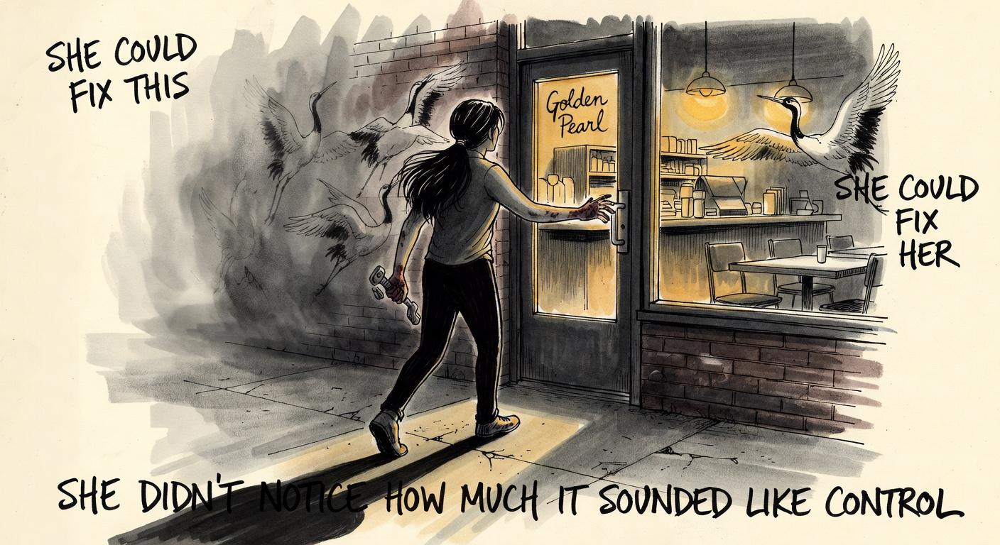
She could fix this. She could fix her.
The thought felt good — warm and purposeful, like picking up a tool that fits your hand. She didn't notice, not yet, how much it sounded like control.
Mrs. Pratt's Thursday
The tea arrived first. It always did.
Every Thursday at five-fifteen, Uncle Dao carried a white pot of oolong to booth four and set it down without being asked. He poured the first cup himself — a gesture Maia had seen him extend to no one else — and left the second cup inverted on its saucer across the table, where no one ever sat.
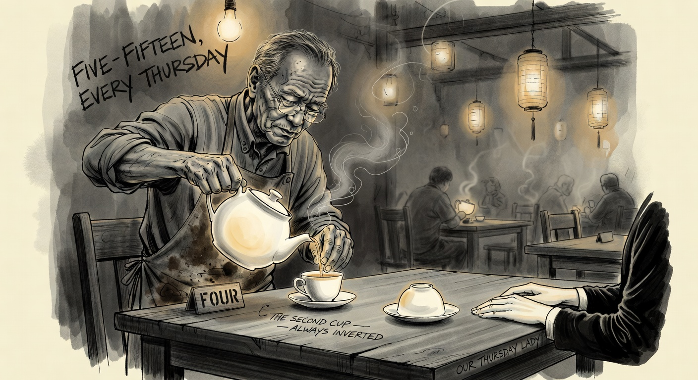
Maia had been watching Mrs. Lucinda Pratt eat alone for as long as she could remember. As a little kid she'd assumed the woman was a queen. The posture demanded it — that straight-backed, chin-level carriage that made the vinyl booth look like a throne. Silver hair pinned low and tight. Tortoiseshell reading glasses on a beaded chain. A pressed blouse, always, and a cardigan with actual buttons, as if zippers were a moral compromise she refused to make.
Nǎi Nai had called her "our Thursday lady" with a warmth that suggested something more than habit. Once, when Maia was seven or eight, she'd asked why Mrs. Pratt always ate alone, and Nǎi Nai had said, "Some people are alone and some people are waiting. She is waiting." Maia hadn't understood then. She wasn't sure she understood now.
But tonight she wasn't watching Mrs. Pratt. She was watching Dao.
Four days had passed since Sunday's encounter with June, and Maia had spent every one of them refining her plan. She'd positioned herself at the register — Nǎi Nai's old stool, the one with the wobbly leg that she'd learned to balance on by shifting her weight left — with her math notebook open to a page of fake homework. From here she had a clean sightline to the service station where Dao kept the cookies in a shallow wooden tray, and to booth four, where Mrs. Pratt was studying the menu she'd never once needed to read.
The order would be the same. It was always the same. Steamed fish with ginger and scallion. White rice. A side of stir-fried pea shoots that Mr. Fong prepared with an extra clove of garlic because Mrs. Pratt had once, years ago, mentioned she liked garlic, and Mr. Fong had a memory like a steel trap for preferences and grudges.
Maia wrote the number 4 in her notebook and circled it. Booth four. Thursday. Mrs. Pratt.
The dining room was half-full — the Nguyen family at their usual round table, old Mr. Salazar hunched over his soup by the window, a couple Maia didn't recognize sharing a plate of scallion pancakes. Henry was in the back office with the door closed, on the phone with someone whose voice Maia could hear but not decipher. Probably the real estate agent again. She pushed the thought away. One problem at a time.
Dao moved through the room with his usual economy — tray balanced on his left palm, right hand free to pour water or clear a plate. He delivered the Nguyens' order, paused to refill Mr. Salazar's tea, then circled back to the service station.
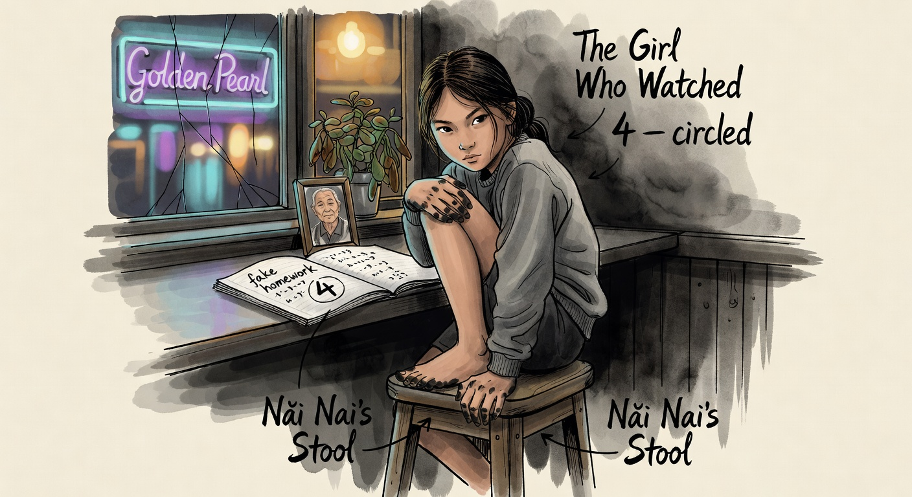
Here. This was the moment.
Maia leaned forward on the stool, pen frozen over her notebook.
Dao reached into the wooden tray and lifted two fortune cookies. He held them up to the pendant light — one in each hand, arms slightly raised, squinting through his wire-rimmed glasses at something on the wrappers. His lips moved. Not words, exactly. More like counting. He turned the cookie in his right hand, angled it, then set it back in the tray. The left one he placed on the small saucer beside Mrs. Pratt's check.
But before he carried it over, he did something Maia hadn't caught on Friday. He reached into his apron pocket — the front one, where the notebook lived — and touched something inside. Not pulling it out. Just touching it, the way you'd touch a lucky coin. Confirming.
Then he walked to booth four.
Mrs. Pratt had finished her fish. The pea shoots were gone. The rice bowl was clean — she ate with the thoroughness of someone who had been taught not to waste, and the precision of someone who considered a meal a task to be completed properly. Her teacup was half-full, still steaming.
Dao set the check and the saucer down with a small nod. No words. Mrs. Pratt returned the nod — the exact same angle, the exact same duration, a greeting between two people who had perfected the art of saying everything by saying nothing.
Maia watched Mrs. Pratt reach for the cookie.
She cracked it with both hands, cleanly, the way you'd break a communion wafer — one decisive motion. The shell fell in two neat halves on the saucer. She extracted the slip of paper, unfolded it, and put on her reading glasses.
And went still.
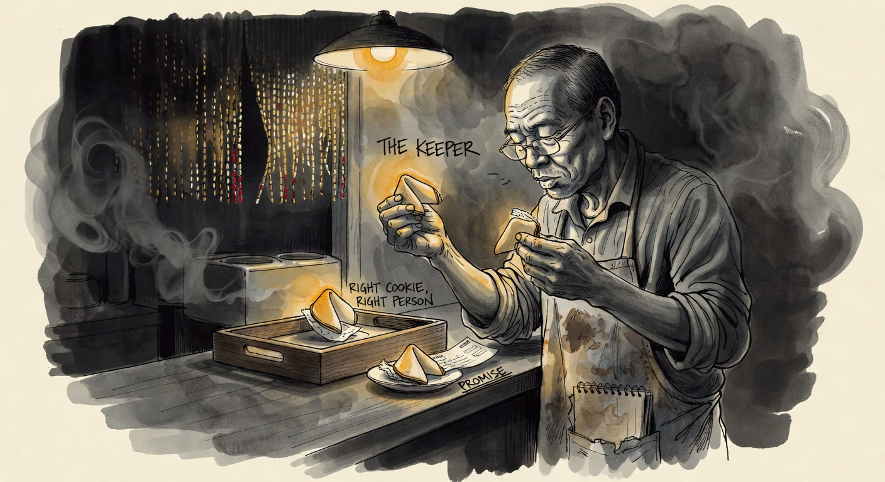
Not frozen — still. The way a pond goes still when the wind stops, every ripple settling at once. Her hands didn't tremble. Her expression didn't crumble. She simply stopped, the fortune held in both hands at chest height, her eyes fixed on the words behind those tortoiseshell frames.
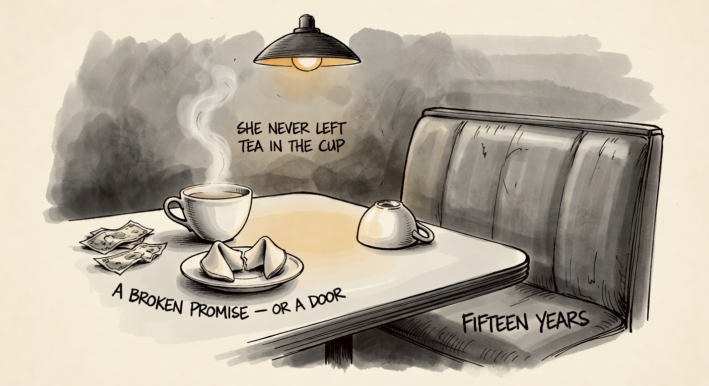
The tea sent up its ghost curl between her and the empty seat across the table.
Maia counted to fifteen before Mrs. Pratt moved again. When she did, it was with the careful deliberation of someone handling something breakable. She folded the fortune slip once, twice, and tucked it into her purse — a structured leather bag, camel-colored, that she closed with a decisive click. Then she placed three bills on the check without counting them. Maia knew, because she'd checked before, that Mrs. Pratt always tipped exactly twenty percent, calculated to the penny, the bills pre-selected at home.
Mrs. Pratt stood. Adjusted her cardigan. Touched the beaded chain of her glasses.
And left without finishing her tea.
In all the Thursdays Maia could remember, Mrs. Pratt had never left tea in the cup.
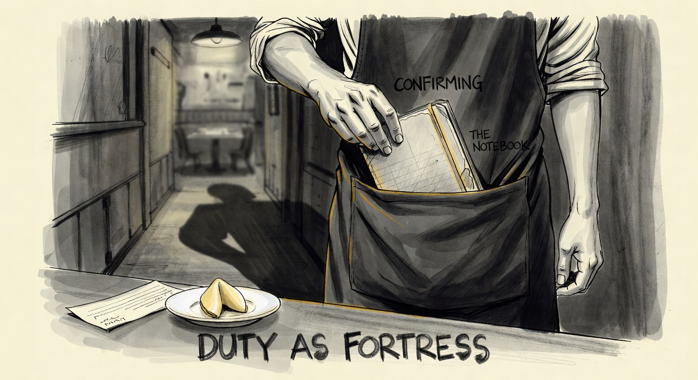
Maia waited until Dao was clearing the Nguyens' table, his back to the kitchen, before she slipped through the beaded curtain.
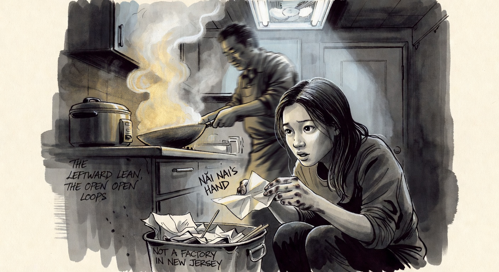
The kitchen was bright and loud — Mr. Fong clanging a wok, the exhaust fan roaring, steam rising from the rice cooker in a thick white column. Maia moved past it all to the narrow counter by the back door where Dao kept his prep materials: a stack of paper napkins, a cup of pens, and a small wastebasket lined with a plastic bag.
She'd seen Dao toss things here before service. Test slips, she'd assumed. Misprints.
The wastebasket held crumpled napkins, a broken chopstick, and — there, near the bottom — a small slip of paper, folded once.
Maia fished it out.
The handwriting hit her first. Not printed. Not typed. Written in that particular mix of careful and hurried that she knew the way she knew her own face in a mirror — the slight leftward lean, the open loops on the l's, the way the t-crosses floated above the letters like birds that couldn't quite land.
Nǎi Nai's hand.
The fortune read: Tell them before the silence becomes the story.
Maia read it three times. The words didn't soften with repetition. They got heavier, denser, like a stone shell she couldn't crack open far enough to see all the way inside. She didn't know who "them" was. She didn't know what silence. But the sentence had the weight of something that had been true for a long time before anyone wrote it down.
This was not Patience is a river. This was not a proverb stamped by a machine in a factory in New Jersey. This was a message — specific, aimed, personal — written by a woman who had watched Mrs. Lucinda Pratt eat alone in booth four every Thursday for fifteen years and seen something in that solitude that Mrs. Pratt herself could not, or would not, name.
Maia folded the slip and put it in her pocket.
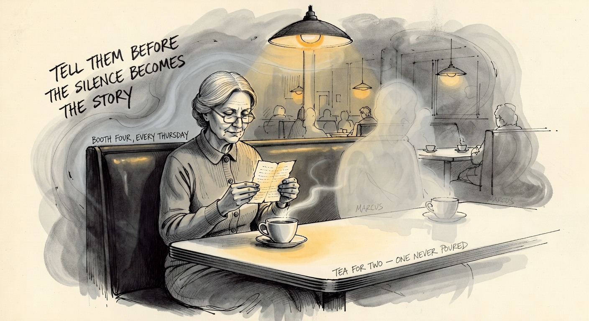
The kitchen noise rushed back in — the wok, the fan, Mr. Fong yelling at someone to check the oil temperature. She stood there with her hand pressed against the paper through the fabric of her jeans, and felt the shape of the thing she was building click into place like a load-bearing wall finding its footing.
The cookies were real. The fortunes were real. They knew things about people — true things, hidden things, the things you carried in your purse and never showed anyone. And whoever was writing them — whatever force was moving through Nǎi Nai's handwriting, through Dao's careful hands, through the golden shells that cracked open to reveal exactly the right words at exactly the right time — that force could be understood. Mapped. Directed.
She thought of June, standing outside the window with her architecture book held like armor. I have learned what free costs.
Somewhere in the system, there was a fortune for her. And Maia was going to find it.
She pushed back through the beaded curtain into the dining room, where the lanterns swung gently in the draft from the kitchen, casting amber circles on the empty tables. Booth four was cleared. The tea had been poured out. The two halves of Mrs. Pratt's cookie shell sat on the saucer like a broken promise, or a door swinging open on both sides at once.
Maia sat on Nǎi Nai's stool and opened her notebook to a fresh page.
At the top, in block letters, she wrote: HOW IT WORKS.
And underneath, smaller, in her own cramped hand that looked nothing like her grandmother's: Step one: find the notebook in Dao's apron.
The pen felt good in her fingers. The plan felt better. She had a mystery, and she was going to solve it — not to understand it, though she told herself that was the reason, but to hold it. To aim it. To use it the way a key uses a lock: precisely, deliberately, and only in the direction she chose.
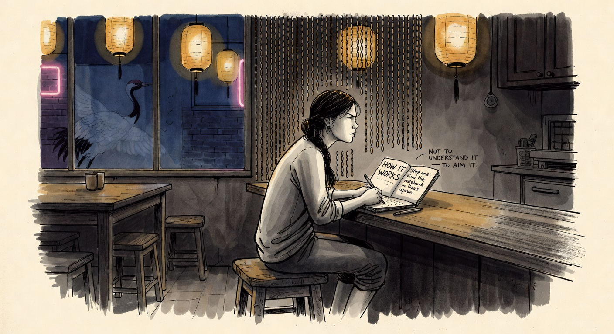
Outside, the neon sign buzzed its two-note hum, and the cranes on the brick wall next door faded a little more into the dark, and somewhere on Mott Street past the pharmacy, in a building with teal awnings, a girl who didn't eat at restaurants was probably reading about why things don't fall down.
Maia was going to give her a reason to come inside.
The Shoebox Gospels
The door to the back office stuck. It always had — the frame had swollen years ago during a summer when the building's ancient pipes burst, and Nǎi Nai had refused to let Henry fix it because, she said, a door that made you work to open it kept out the people who didn't really need to come in.
Maia put her shoulder into it on a Saturday morning, while Henry was downstairs arguing with a produce supplier about the price of bok choy and Uncle Dao was not yet due for another hour. The door gave with a sound like a held breath releasing.
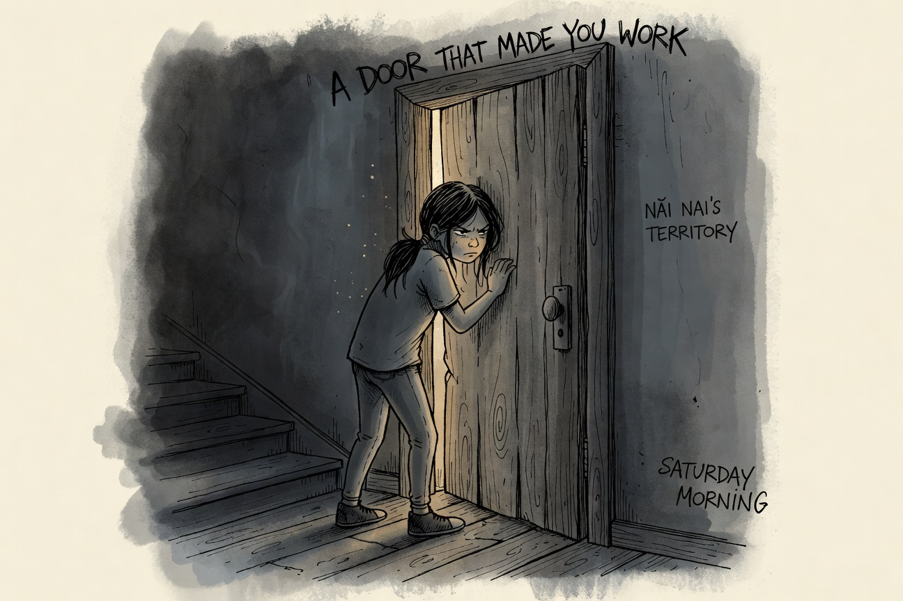
Jasmine.
Not fresh — not the sharp green sweetness of the hand cream Nǎi Nai had rubbed into her knuckles every night after closing. This was the ghost of it, trapped in the fabric of the curtains and the wood grain of the desk, a scent so specific that Maia's body responded before her mind could catch up. Her throat tightened. Her hands went to her sides. She stood in the doorway and breathed it in the way you'd drink water after forgetting you were thirsty.
The office was small. It had always been small — barely room for the desk, the filing cabinet, and the wooden chair with the cushion Nǎi Nai had embroidered herself, a pattern of peonies in red thread that had faded to the color of old brick. But it felt smaller now, crowded with stillness. The calendar on the wall was turned to March. Nǎi Nai had died in March. No one had flipped the page.
Her reading glasses sat on the desk, folded, lenses smudged. A ballpoint pen with the cap off. A ceramic cup that had held tea so many times the inside was stained a permanent amber. And on the windowsill, the jade plant — the one Nǎi Nai had watered every morning before the restaurant opened, talking to it in Cantonese the way she talked to everything she loved, which was to say firmly and with detailed instructions.
The jade plant was brown. Its thick leaves had gone papery and thin, curling inward like fists. The soil in the pot had cracked into a tiny desert.
Maia looked at it and felt something hot behind her eyes, but she blinked it away. She hadn't come here to cry. She'd come here to search.
The notebook in Dao's apron was step one. But step one required Dao to take the apron off, and Dao wore that apron the way other people wore skin — it came off only at closing, and by then Henry was always hovering, locking up, turning off lights. Maia needed another way in.
So: the office. Nǎi Nai's territory. If the fortunes were written here — and they had to be, because where else would a woman who spent forty years in this building sit down to write three hundred letters to people she loved — then there would be evidence.
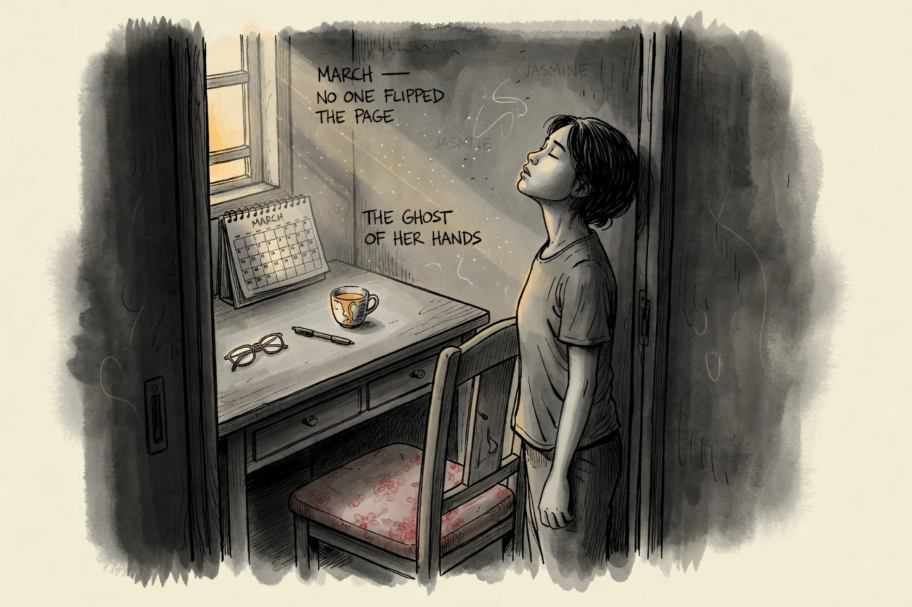
Maia started with the desk drawers. The top one held rubber bands, paper clips, a stack of takeout menus from 2019, and a small red envelope with nothing inside. The second drawer: tax documents, a folder labeled INSURANCE in Henry's handwriting, and a photograph of Maia at age six sitting on the counter with her legs swinging, a fortune cookie in each hand, grinning so wide her eyes had disappeared. Maia turned the photo facedown and kept looking.
The bottom drawer was stuck. She pulled harder. It scraped open and revealed a canvas tote bag, folded flat, and beneath it — wedged against the back of the drawer as if someone had pushed it there deliberately, not hiding it exactly but placing it where only a person who was looking would find it — a shoebox.
It was an old one. The cardboard had softened at the corners, and the lid was held on by a single rubber band that had lost most of its stretch. The brand name on the side was faded past reading. Maia lifted it out and set it on the desk, and the weight of it surprised her — not heavy, but full. Something inside shifted and rustled, the sound of dry leaves or folded paper.
She pulled off the rubber band. Removed the lid.
Hundreds of them.
Tiny slips of paper, each one folded once or twice, packed together so tightly they looked like origami birds nesting. Some were white, some cream, some the pale yellow of old newsprint. A few had been folded into sharp triangles; most were simple rectangles. They filled the box to the brim, and when Maia's trembling hands hovered above them, the ones on top shifted in the displaced air, as if breathing.
She picked up the first slip and unfolded it.
The crack in the wall lets the light through. Stop plastering.
Nǎi Nai's handwriting. The leftward lean, the floating t-crosses. Unmistakable.
Maia unfolded another.
Your mother would have said yes. You already know this.
And another.
Gam yat ho tin. The sky is good today and so are you, even when you forget.
She sat down in Nǎi Nai's chair — the peony cushion exhaling dust and the faintest trace of jasmine — and began reading them one by one.
Some were in English, clean and direct: Forgive the first thing. The rest will follow. Some mixed Cantonese phrases into English sentences in the way Nǎi Nai had always spoken, two languages braided together like fingers interlocking: When you feel mòuh yuhng, remember — the teapot does not know it is beautiful, but it holds the warmth anyway. Some were blunt enough to make Maia laugh despite herself: Stop dating him. You know why. One said simply: Eat. Another: Call your sister. She won't call first. She never could.
And some had been crossed out and rewritten — not once but three, four, five times, the paper nearly worn through with the effort of getting the words right. One slip had a first draft that read You are not alone crossed out with a single firm line, then You have never been as alone as you think also crossed out, then finally, in smaller letters squeezed beneath the wreckage: The loneliness is real. But it is not the whole story. As if the generic comfort had been tested and found insufficient, and Nǎi Nai had refused to send a message that didn't land with the specific weight the person needed.
Maia's hands were shaking. She pressed them flat against the desk.
She recognized two of the fortunes immediately. Two houses are better than one if you let both doors stay open — Theo's. The paper was slightly different from the one he'd cracked open at the restaurant, but the handwriting was identical, the same careful strokes. A draft, or a copy. And there, near the bottom of the box: Tell them before the silence becomes the story. Mrs. Pratt's. The slip in the wastebasket had been crumpled; this one was pristine, as if Nǎi Nai had written it twice to make sure one survived.
Her grandmother had written them. All of them. Every fortune in this box — every fortune in every cookie Uncle Dao had carried to every table — had come from this desk, this chair, this room that smelled like jasmine and hadn't been touched since March.
Maia waited for the feeling to name itself.
It should have been grief. She was sitting in her dead grandmother's chair, holding her dead grandmother's words, surrounded by the artifacts of a life that had stopped six months ago and left everything exactly where it was, down to the smudged glasses and the dead plant and the calendar that would say March forever.
But what she felt was something brighter. Electric. Almost giddy.
Because this changed everything.
Nǎi Nai hadn't just known things about people — she'd written them down. She'd sat in this chair and poured whatever she knew, whatever she saw, into hundreds of tiny messages, each one calibrated like medicine, each one aimed. The handwriting wasn't incidental. It was the delivery system. The fortunes worked because Nǎi Nai had put something into them — some part of the attention she'd paid for forty years, some distillation of all that watching, compressed into sentences that could fit inside a cookie and detonate inside a person's chest.
It was magic. Obviously it was magic. Not the wand-and-hat kind, but the kind that lived in the hands of someone who could see people so clearly that her words arrived before the need did. Theo's fortune had known about the divorce before Theo did. Mrs. Pratt's fortune had named a silence so old it had become architecture. You didn't do that with guesswork. You didn't do that with good intentions and a sharp eye.
You did that with something more.
Maia picked up a fortune she hadn't read yet and held it to the light from the window. The paper was thin enough to see the shadow of the dead jade plant through it, the brown curled leaves like a small dark crown behind the words.
You will know when to stop looking and start seeing.
She didn't know who that one was for. She wanted it to be for her.
She put it back in the box, gently, and replaced the lid. The rubber band went around it with a soft snap. She sat for another minute in the chair, her sneakers not quite reaching the floor, the jasmine settling around her like a conversation she'd arrived in the middle of.
Then she pulled her math notebook from her back pocket and opened it to the page that said HOW IT WORKS.
Under Step one: find the notebook in Dao's apron, she added:
Step two: the shoebox. Back office, bottom drawer. Hundreds of fortunes. All in her handwriting. All different. She wrote them for specific people.
And then, because the idea was so big it needed its own line:
Nǎi Nai could see the future. She wrote it down before she died so it wouldn't stop coming true.
Maia closed the notebook. The giddiness was still there, fizzing in her chest like carbonation, and underneath it — quieter, the way bass notes are quieter — something she refused to examine too closely. A question shaped like a splinter: if Nǎi Nai could see the future, why hadn't she seen her own?
She left the office and pulled the door shut behind her. It stuck again, and she had to yank it twice.
Good. A door that made you work kept out the people who didn't need to come in.
But Maia had needed to come in. And now she had the box, and the box had the words, and the words had the power, and all she needed was the notebook to know which words went where.
Downstairs, she could hear Henry finishing with the supplier, his voice doing that thing where it tried to sound decisive and landed somewhere closer to tired. The kitchen fan hummed. A delivery truck beeped on the street outside.
Maia touched the fortune slip still folded in her jeans pocket — Tell them before the silence becomes the story — and headed for the stairs, already planning how to get Dao's apron off him long enough to read what was inside.
Forced Fortunes
She chose the fortune on Tuesday night.
The restaurant was closed — Mondays and Tuesdays, always — and Henry had gone to bed early with a headache and a glass of water balanced on a stack of unpaid invoices. Maia waited until she heard his door click shut, then padded downstairs in socks, through the dark dining room where the chairs sat upside down on the tables like strange animals sleeping with their legs in the air, and into the back office.
The door stuck. She shouldered it open. Jasmine.
She'd been back three times since Saturday, each visit quicker and more purposeful than the last. The grief-weight of the room had lessened — or maybe she'd just gotten used to carrying it. Either way, she went straight for the bottom drawer, pulled out the shoebox, and set it on the desk under the glow of Nǎi Nai's old banker's lamp.
She was looking for a fortune for June.
Not any fortune. The right one. The one that would crack June open the way Theo's had cracked him open — that would name the thing June was carrying and make her set it down. Maia had spent two days thinking about what that thing might be. June didn't eat at restaurants. June didn't accept kindness. June stood outside the window and looked in but wouldn't cross the threshold, like a cat deciding whether a house was safe.
So: a fortune about doors. About entering. About letting yourself be welcomed.
Maia lifted the lid and began sorting.
She was careful — she'd learned to be, after the first visit when she'd nearly bent a slip trying to unfold it too fast. Nǎi Nai's handwriting was small, and some of the fortunes had been folded so tightly they resisted opening, the paper stiff with age or intent. A few she couldn't open at all. One in particular — a slip folded into a hard triangle, the paper thicker than the others, almost calcite-smooth — refused every attempt. She'd tried twice now, working her thumbnail into the crease, and both times the fold held as if sealed. A stone shell. She set it aside each time with a prickle of frustration and something else, something she couldn't name, that felt like being told not yet.
Tonight she skipped that one entirely. She was hunting.
When you stop running, the road becomes a path. Too vague.
Gam yat ho tin. Too Cantonese — June wouldn't understand it.
The door you refuse to open is the one built for you.
Maia held the slip under the lamp. The handwriting was Nǎi Nai's, but the ink was darker than most — a different pen, maybe, or a day when the words came harder. There were no cross-outs. The sentence had arrived whole.
She read it again. The door you refuse to open is the one built for you.
Perfect.
She folded it back along its original creases, slipped it into the pocket of her hoodie, and replaced the lid on the box. The rubber band snapped into place. She pushed the drawer shut with her knee, turned off the lamp, and stood in the dark office for a moment, breathing jasmine, feeling the slip of paper against her chest like a second heartbeat.
She had a plan. Wednesday was a school night, but Thursday was a restaurant night, and Thursday meant Uncle Dao would be working the floor, and Mrs. Pratt would be in booth four, and the dining room would be full enough that one more girl at a table wouldn't draw attention.
All Maia had to do was get June through the door.
She found her at the library on Wednesday afternoon.
June was in her usual spot — the architecture section, cross-legged on the floor between two shelving units, Kwame's army jacket pooled around her like a tent. She was reading a book about bridges. The cover showed a suspension bridge at sunset, cables fanning out like the strings of a harp.
"That one any good?" Maia dropped down beside her without waiting to be invited.
June didn't look up. "It's about load distribution."
"So... no?"
"It's about how weight gets carried across a span without the span collapsing." June turned a page. "It's the most interesting thing in the world."
Maia pulled her knees up. "Come to dinner tomorrow."
Now June looked at her. Dark eyes, level, assessing. "I told you. I don't —"
"You don't eat at restaurants. I know. But this isn't a restaurant thing, it's a — it's my house. I live upstairs. It's basically eating at my kitchen table, except the kitchen is bigger and there's a guy who brings you soup."
June's mouth twitched. Not a smile. The ghost of one, haunting the architecture of her face and then vanishing. "A guy who brings you soup is literally a restaurant."
"Free soup. No check. No tip. No owing anyone anything." Maia leaned forward. "My grandmother's wonton soup. Mr. Fong still makes it from her recipe and it's —" She stopped herself from saying magic. "It's really good."
June closed the bridge book slowly, using her finger as a bookmark. She studied Maia with the same expression she probably used on load-bearing walls — looking for the stress points, the places where the structure might fail.
"Why?"
"Because you're standing outside the window three nights a week and it's October and that jacket is not warm enough."
June's jaw tightened. For a second Maia thought she'd blown it — that naming the thing June did in secret was the wrong move, that June would stand up and walk away and never come back to this section of the library.
But June said: "One bowl. And I'm not staying for dessert."
"We don't have dessert. We have fortune cookies, and those don't count."
"Fine."
"Fine."
June opened the bridge book again. Maia sat beside her for another ten minutes, pretending to read over her shoulder, vibrating with the quiet triumph of a plan coming together.
Thursday. Six-fifteen. The dinner rush had just begun.
Maia had set the table herself — booth six, near the window but not the one June usually stood outside of. She'd folded the napkins into triangles, filled the water glasses, and placed a single fortune cookie on the saucer beside June's place setting. Not one of Uncle Dao's carefully selected cookies from the kitchen supply. The one from her hoodie pocket. Nǎi Nai's words, chosen by Maia's hand.
She'd bypassed the system entirely, and the thrill of it sat in her stomach like swallowed light.
Uncle Dao was working the floor. He'd paused when he saw the pre-set table — his eyes moving from the folded napkins to the cookie on the saucer, then to Maia, who was standing by the register trying to look casual. His expression didn't change. But his hand went to his apron pocket, where the notebook lived, and stayed there.
June arrived at six-twenty, Kwame's jacket zipped to her chin despite the warmth of the restaurant. She stood in the doorway for three full seconds, cataloguing the room — the exits, the other diners, the distance to the street — before walking to the booth where Maia was already sitting.
"It smells like sesame oil and old wood," June said, sliding in across from her.
"That's the smell of forty years of my grandmother cooking in the same kitchen."
"It's a good smell." June said this like a concession, something extracted under duress. But her shoulders dropped half an inch, and she unzipped the jacket.
Uncle Dao brought the soup. Two bowls, steam rising, the wontons floating like small pale clouds. He set them down without ceremony, and Maia watched his eyes flick to the fortune cookie on the saucer — the one he hadn't placed — and then away. A muscle in his jaw moved. He said nothing. He walked back to the service station, and Maia saw his hand go to the apron pocket again, fingers closing around the notebook's edge.
June ate. She ate the way someone eats who has been hungrier than she wants anyone to know — steadily, without rushing, savoring each wonton but not pausing between them. Maia ate too, but she was watching June the way she imagined Nǎi Nai had watched people: closely, with purpose, waiting for the right moment.
The right moment, she decided, was when June set down her spoon.
"There's a cookie," Maia said. Casual. Light. As if she'd just noticed it.
June looked at the fortune cookie on the saucer. "I know what fortune cookies are."
"So open it."
June picked it up. Turned it over in her fingers. She held it the way she held her library books — carefully, with both hands — and then cracked it open with a clean snap.
The slip of paper fell onto the red tablecloth. June unfolded it.
Maia watched her read it. Watched her eyes move across the words — The door you refuse to open is the one built for you — and watched the shift happen. Not wonder. Not the soft crumpling that had happened to Mrs. Pratt. Something harder. Something that started in June's shoulders and moved up through her neck and into her jaw, tightening everything it touched.
June set the slip down on the table. Pressed it flat with one finger. Read it again.
Then she looked at Maia, and her eyes were furious.
"Who told you?"
"What? Nobody told me any —"
"Who told you about the doors." June's voice was low, precise, every consonant a nail. "Who told you I don't — that I won't —" She stopped. Reset. When she spoke again, the formal diction was back, the drawbridge raised. "You invited me here to give me this."
"It's just a fortune cookie, June, it's not —"
"Do not." June stood up. The motion was sudden enough that her hip caught the table's edge and the water glasses shuddered. "Do not tell me what it is. I know what it is. It is someone who does not know me deciding what I need to hear and putting it in a cookie so I'll swallow it with my soup like medicine."
The restaurant had gone quiet. Not silent — Mr. Fong's wok still hissed in the kitchen, and the Nguyen kids were still arguing over the last spring roll — but the tables nearest booth six had turned to look. Mrs. Pratt, in booth four, lowered her teacup.
"June —" Maia reached across the table.
"I am not a door." June's voice cracked on the last word, and the crack was worse than the anger because it showed what was underneath. "I am not a project. I came here because you said no strings, and the first thing you did was tie one around my wrist."
She picked up the fortune slip, crumpled it into a ball the size of a marble, and dropped it on the table beside the full plate of dumplings Uncle Dao had brought while Maia wasn't looking. Then she zipped Kwame's jacket to her chin and walked out of the restaurant without looking back. The door didn't stick for her. It swung open and shut in one clean motion, and the brass bell above it rang once, a bright, indifferent sound.
Maia sat in the booth with her hand still extended across the table, reaching for a person who was no longer there.
The crumpled fortune slip sat on the red tablecloth like a small white wound. Beside it, the dumplings cooled in their sauce, untouched, and the wonton soup had gone still, its surface flat as a held breath. From across the dining room, Uncle Dao stood at the service station with his tray at his side, watching Maia with an expression she couldn't read — or could, if she were being honest, which she wasn't. It was the look of someone watching a mistake he'd seen coming and had not been allowed to prevent.
He turned away first. Picked up a water pitcher. Went back to work.
Maia pulled her hand back across the table and picked up the crumpled fortune. She smoothed it out against her thigh under the table where no one could see, pressing the creases flat with her thumb, as if she could undo what had happened by uncrumpling the paper.
The door you refuse to open is the one built for you.
The fortune was real. Nǎi Nai had written it. But Nǎi Nai hadn't written it for June — Maia had decided that, all on her own, in a dark office at eleven o'clock on a Tuesday night, sorting through other people's mail and choosing which letter to deliver to a girl she'd known for less than two weeks.
She folded the slip and put it in her pocket, where it pressed against Mrs. Pratt's fortune like two accusations stacked.
The restaurant filled back in around her — conversation resuming, chopsticks clicking, the Nguyen kids laughing at something. Normal Thursday sounds. But Maia stayed in the booth until Uncle Dao cleared the untouched dumplings, and when he reached for June's water glass, his hand paused over the table the way it paused over every table before placing a cookie. Except this time there was no cookie to place. Just the empty saucer, and the space where a girl had been, and the faint smell of sesame oil settling over everything like a question Maia didn't know how to answer yet.
Nǎi Nai's Cantonese
The rain came on Saturday morning, a steady October drum against the apartment windows that made the whole building smell like wet concrete and old wood.
Maia hadn't gone back to the restaurant since Thursday. Two days. She'd told Henry she had a stomachache, which was technically true if you counted the feeling of having swallowed something heavy and sharp that wouldn't dissolve. He'd brought her toast and ginger ale and didn't ask follow-up questions, which was both a relief and a small, familiar disappointment.
She spent Friday reorganizing her desk. Saturday she reorganized it again. The two fortune slips stayed in her hoodie pocket, which stayed balled up in the corner of her closet, which she did not open.
At eleven-thirty, Theo texted: dad's apt smells like paint. can i come over
yeah obviously
He showed up twenty minutes later with wet hair and a paper bag of pão de queijo his father had made that morning — the small Brazilian cheese breads that Theo's dad baked whenever he didn't know what else to do, which lately was always. Theo set the bag on Maia's desk, pulled off his baseball cap, shook the rain out of his curls, and sat on the floor with his back against her bed frame.
"Your dad's selling the building?" he said.
Maia, cross-legged on the bed, looked up from the book she wasn't reading. "Where'd you hear that?"
"Mr. Fong told my mom. She told my dad. My dad told me while we were painting his bedroom." Theo picked at the carpet. "He's painting it blue. Like, aggressively blue. Like the ocean threw up."
Maia almost smiled. Almost. "He's not selling. He's thinking about it."
"That's selling with extra steps."
"The thing is, he has meetings. With a real estate person. But meetings aren't — they're just meetings."
Theo looked at her with his too-perceptive eyes, the ones that noticed tension in a room before anyone spoke. "You okay?"
"I'm fine."
"You're folding the corner of that page and you haven't turned it in ten minutes."
She flattened the page. "I messed something up."
Theo waited. He was good at waiting — better than Maia, who filled silences the way her father filled his hands, compulsively, as if stillness were a dare.
"With June," she said. "I tried to — I gave her something she didn't ask for. And she got mad. Really mad. The right kind of mad."
"The right kind?"
"The kind where the person is right to be mad and you can't even argue because they named the thing you did better than you could."
Theo pulled a cheese bread from the bag and tore it in half, steam escaping. He handed her the bigger piece. "Was it a fortune cookie thing?"
Maia took the bread. It was warm and salty and exactly right. "Yeah."
"Maia."
"I know."
"You can't just — those aren't yours to hand out."
"I know."
He ate his half in two bites, chewing thoughtfully. "Come downstairs. It's Saturday, the lunch rush is starting, and you're up here reorganizing a desk that was already organized."
She didn't want to. But Theo was already standing, brushing crumbs off his jeans, and the apartment was too quiet and the rain was too loud and the closet where her hoodie sat was too close.
The restaurant at noon on a rainy Saturday had a particular quality — the windows fogged at the edges, the hanging lanterns caught in the condensation like trapped suns, and everyone who came in shook water from their jackets and looked grateful to be somewhere warm. Mr. Fong had made his hot-and-sour soup, and the smell of it — vinegar and white pepper and something darker underneath — hit Maia at the bottom of the stairs like a hand on her shoulder.
Henry was at the register, glasses on, sorting through a stack of papers with the focused misery of a man doing math he didn't want to do. He'd laid the documents out in rows across the counter, and Maia recognized the real estate agent's letterhead on two of them. He looked up when she appeared.
"Stomachache better?"
"Getting there."
"There's congee in the back if you want it."
"Thanks, Ba."
He went back to his papers. Maia watched him for a moment — the way his pen tapped the counter in a rhythm that matched nothing, the way his eyes kept drifting to Nǎi Nai's photo on the shelf behind the register and then snapping back to the numbers as if caught. She wanted to say something. She didn't know what.
Theo had already claimed the corner booth — his booth, really, the one he'd been sitting in since he was small enough to need a booster seat. Uncle Dao appeared with two glasses of water and a plate of sesame balls that no one had ordered, setting them down with the quiet efficiency of a man who had been anticipating this exact arrival.
"Little fish," Dao said to Maia. A greeting, not a question. His eyes held hers for a beat longer than usual, and she felt the weight of Thursday in the space between them — everything he'd seen and hadn't said. But his face was calm, and he moved on to the next table without pause.
They ate sesame balls. Theo built a small wall out of sugar packets around his water glass, fortifying it with a napkin buttress. Maia watched the dining room fill: the Nguyen family at their usual table, Mr. Salazar with his soup, two women she didn't recognize sharing a plate of scallion pancakes and laughing so hard one of them had to put her forehead on the table.
Then Uncle Dao did the thing.
Maia saw it because she was watching — because she was always watching now, because the restaurant had become a text she couldn't stop reading. Dao was carrying the check to Theo's table, a fortune cookie on the saucer beside it, and he paused. The pause. The one she'd first noticed weeks ago, the one where his hand hovered and his eyes went to the cookie and something behind his expression recalibrated, like a compass needle finding north.
But this time he didn't hesitate long. He set the saucer down beside Theo's water glass with a small, deliberate motion — almost ceremonial — and walked away.
Theo looked at the cookie. Looked at Maia. "I didn't order —"
"You never order it. It just comes."
He picked it up. Turned it over in his fingers. And Maia saw it — the tiny ink mark on the wrapper, a symbol she recognized from the shoebox, from the notebook, from the system she'd violated two days ago. This cookie was coded. This cookie was meant.
Theo cracked it open.
The slip of paper was smaller than the first one he'd received, and the handwriting on it was different from the generic fortunes — tighter, more deliberate, with a slight leftward slant that Maia would have known in the dark, by touch, the way you know your own name.
Theo read it silently. His lips moved. Then he stopped.
"What does this part mean?" He turned the slip toward her, pointing to three characters written in brushstroke beside the English text.
Maia looked.
The English read: Today the sky is good to us — so build something under it.
The Cantonese beside it read: 今日好天.
Gam yat ho tin.
The room tilted. Not visibly — the lanterns stayed still, the tables stayed level, Mr. Fong's wok kept hissing — but something inside Maia shifted on its axis, a tectonic plate of understanding grinding against the plate of what she wanted to believe.
Gam yat ho tin. Today the sky is good to us. Nǎi Nai's phrase. Not a common expression — Maia had asked her Cantonese tutor once, and the woman had frowned and said it wasn't standard, that it sounded like something someone had made up. Because Nǎi Nai had made it up. It was her private greeting, her daily incantation, the thing she said to the people she loved when they walked through the door.
She'd said it to Theo every time he came in. Every single time, from when he was three years old and barely reached the counter, and she'd lean over and ruffle his curly hair and say gam yat ho tin, little one, and he'd giggle without understanding the words because the meaning wasn't in the words, it was in the hand on his head and the voice that said them.
Maia stared at the slip. The brushstrokes were unmistakable. The slight wobble on the second character — Nǎi Nai's hand had trembled in her last year, the cancer eating at her fine motor control, but she'd kept writing, kept folding, kept making the cookies because the cookies were not cookies, they were —
No.
She pulled back from the thought. Sealed it shut.
Because if Nǎi Nai had written this fortune for Theo specifically — not channeled it, not been a vessel for some larger magic, but written it, with her own hand, from her own knowledge of a boy she'd watched grow up — then the fortunes weren't prophecy. They were letters. And the magic Maia had been chasing was just a woman who paid attention.
That couldn't be right. That was too small. That was too ordinary. That was —
That was unbearable, because it meant Nǎi Nai was gone and the fortunes were finite and when the shoebox was empty there would be no more.
So Maia did what she'd been doing since the funeral: she built a better story.
Nǎi Nai was special, she told herself, watching Theo trace the Cantonese characters with his fingertip. She had a gift. The words came through her, not from her. She was a — a channel. A medium. The magic used her handwriting because that's what magic does, it wears the face of the person closest to the truth.
The mythology assembled itself with the speed and conviction of a twelve-year-old who needed it to be true. Nǎi Nai as oracle. Nǎi Nai as mystic. The restaurant as temple, the cookies as sacrament, Uncle Dao as priest. It was easier than the alternative. It was so much easier.
Across the table, Theo was crying.
Not the way he'd cried after his parents' announcement — that had been shock, a system overload, tears that came because the body didn't know what else to do. This was different. This was quiet and specific. One tear had fallen onto the fortune slip, blurring the ink at the edge of the English text, and Theo was looking at the smudge with an expression Maia had never seen on him before.
Wonder. Not at the fortune's accuracy. At being spoken to.
"She used to say this to me," he whispered. "Your nǎi nai. When I came in. She'd say this thing in Cantonese and I never knew what it meant but it always made me feel like —" He stopped. Swallowed. Started again. "Like the day was going to be okay. Just because she said so."
He pressed the fortune flat on the table with both palms, smoothing it the way Maia had smoothed June's crumpled slip two days ago — but gently, reverently, the way you handle something given rather than something taken.
"Build something under it," he read again. He laughed — that hiccup of joy that always arrived before his words. "She's telling me to build something. She knew me."
She knew you, Maia thought, and the thought had two meanings and she chose the one that let her keep believing.
"The cookies are special," Maia said. "They know things."
Theo wiped his eyes with the back of his hand and looked at her with a clarity that made her uncomfortable. "Or she did."
Maia didn't answer. She looked past him, through the fogged window where the rain was easing and a thin band of pale sky showed above the rooftops, and she thought: gam yat ho tin. Today the sky is good to us. Her grandmother's voice in her head, clear as the bell above the door.
She excused herself. Walked to the back office. Opened the bottom drawer.
The shoebox was still there — Uncle Dao hadn't moved it yet, or maybe he'd put it back, she couldn't tell. She lifted the lid and found the cookie marked with her father's symbol, a tiny character that looked like a house with one wall missing. She'd seen it in the notebook. She knew whose it was.
She picked it up. Held it in her palm. It was lighter than she expected, as if the cookie itself were mostly air and the fortune inside were the only thing with weight.
From the dining room, she could hear Henry's pen tapping the counter. The real estate papers rustling. The sound of a man trying to subtract his way out of grief.
Maia closed her fingers around the cookie and put it in her pocket.
Not yet. He wasn't ready. She would decide when.
She slid the drawer shut, and the shoebox disappeared into the dark, and in the dining room Theo was still sitting with his fortune pressed flat under both hands, reading it again, building something under the sky his grandmother had called good.
The Apron Notebook
The fluorescent tube above the kitchen prep table buzzed at a frequency that lived right behind Maia's left eye.
She'd been sitting on the milk crate beside the walk-in for forty minutes, pretending to do homework on her phone, waiting for the restaurant to empty. It was Tuesday — a slow night, only six tables — and Mr. Fong had already scrubbed down his station and left with a grunt that passed for goodnight. The dishwasher kid whose name Maia could never remember had followed ten minutes later, earbuds in, not looking up.
That left Uncle Dao.
She could hear him in the dining room, the soft percussion of chairs being lifted onto tables. Then the broom. Then the particular silence that meant he was standing at the service station, doing whatever he did at the end of every shift — she imagined him checking the notebook, updating it, marking the day's deliveries complete. A pilot running through his post-flight checklist.
The apron hook was three feet from where she sat. A brass coat hook screwed into the wall beside the kitchen door, darkened with years of oil and steam. Every night, Uncle Dao hung his apron there before walking home. Every night, the notebook rode in its front pocket.
Maia had tried twice before to get to it. Monday she'd come down too early and Dao was still wiping menus. Tonight she'd timed it better. Henry had gone upstairs at nine-thirty, muttering about spreadsheets, and the dining room lights had clicked off section by section until only the service station lamp remained.
Footsteps. The beaded curtain clattered.
Dao came through the kitchen doorway and Maia pressed herself against the walk-in's cold steel, phone dark, breath held. He didn't look her way. His hands went to the apron strings behind his back — a practiced motion, the knot releasing in one pull — and he folded the fabric once, twice, with the same precision he used to set a table. He hung it on the hook. Patted the pocket once, absently, the way you'd pat a dog's head on your way out the door.
Then he took his jacket from the shelf, and the back door opened and closed, and the alley was quiet except for the rain that had been threatening all day and finally made good.
Maia counted to sixty. Then sixty again.
She stood up. Her knees cracked — she'd been sitting too long — and the sound was enormous in the empty kitchen. The apron hung on its hook like a shed skin, dark and limp, and the notebook's edge peeked from the pocket like a secret trying to escape.
She pulled it free.
It was smaller than she'd expected. A composition notebook, the cheap kind you buy in packs of three at the dollar store, but this one had been through something. The cover was soft with humidity, its marbled pattern faded to a watery gray, and the spine had cracked and been retaped with masking tape that had itself gone yellow. It smelled like the restaurant — sesame oil, dish soap, the ghost of Nǎi Nai's jasmine hand cream trapped in the fibers.
Maia set it on the prep table under the fluorescent light and opened it.
The first page stopped her.
Two handwritings. She knew them both.
The headers were Nǎi Nai's — neat, slanting left, each character placed with the deliberateness of someone who'd learned to write in one language and mastered a second by force of will. Column headers in English: NAME. DATE. MARK. NOTES. Below them, in the same hand, the first thirty or forty entries. Names Maia recognized — Mr. Salazar, Mrs. Pratt, the Nguyen parents, people from the block she'd known her whole life — each paired with a date, a tiny ink symbol in the MARK column, and a note in the NOTES column that was sometimes English, sometimes Cantonese, sometimes both.
Mrs. Pratt — Feb 14 — ◇ — son's birthday. she won't call. she needs permission.
Salazar — March 3 — ∿ — hands worse. daughter hasn't visited. he pretends it's fine.
Theo B — ☀ — parents fighting again. he hears everything. he needs to build.
That sun symbol. Maia had seen it on the wrapper of the cookie Dao placed on Theo's saucer two days ago. She was sure of it — a tiny circle with four short rays, drawn in ink so small you'd miss it if you weren't looking.
She turned the page. More entries. More names. The handwriting shifted around page twelve — Nǎi Nai's careful characters gave way to something blockier, more upright, with heavier pressure on the downstrokes. Uncle Dao's hand. He'd taken over the entries sometime in — Maia checked the dates — March. Four months before Nǎi Nai died.
But the system was the same. Names, dates, marks, notes. Dao had continued what Nǎi Nai started, filling in new observations, new dates, updating the NOTES column with the quiet diligence of a man copying scripture.
Mrs. Pratt — Sept 8 — ◇ — still alone on Thursdays. gave her the fortune today. she read it twice.
Theo B — Oct 12 — ☀ — parents separating. Maia told me. he needs the second one now.
Maia's phone was in her hand before she'd decided to use it. She opened the camera, held it above the notebook, and began photographing pages. The blue glow of the screen mixed with the fluorescent overhead, casting her shadow across the columns, and her hands were shaking — not from cold, not from fear, but from the electric certainty that she was holding the operating manual.
This was how it worked. This was the mechanism behind the magic. Nǎi Nai had built a system — observed people, catalogued their struggles, written the exact fortune each person needed, coded each cookie with a symbol, and mapped the whole thing in this notebook so that Uncle Dao could deliver them at the right moment. It was — it was like a spell book. An instruction set for miracles. The observations were the incantations, the symbols were the runes, and the cookies were the delivery system for something that operated on a plane Maia couldn't fully see but could feel humming beneath every page.
She turned to the back. Found the index — Nǎi Nai had made an index, of course she had, alphabetical, each name paired with its symbol and a page number for the full entry. Maia ran her finger down the C's.
Chen, Henry — ⌂
The house with one wall missing.
She flipped to the page. Nǎi Nai's handwriting, not Dao's:
Henry — ⌂ — thinks the restaurant is my legacy. it isn't. HE is. doesn't know how to grieve without solving. give him the cookie when he stops doing math and starts sitting still. he's not ready yet. Dao will know when.
Maia read it three times. The entry was dated five months before Nǎi Nai died. Five months. She'd known she was dying and she'd sat behind that counter and watched her own son bury himself in spreadsheets and she'd written him a fortune and she'd trusted Uncle Dao to know when to deliver it because she wouldn't be there to do it herself.
The mythology pulsed. She saw the future. She knew what Henry would become after she was gone. Only someone with a gift could —
But a smaller voice, one Maia kept shoving into corners, said: Or she just knew her son.
Maia photographed the page. Photographed the index. Photographed three more pages of entries — the Nguyen family, Mr. Salazar, a name she didn't recognize, another she did. Her phone's storage ticked upward. The fluorescent light buzzed its one note.
She found something else near the back: a page in Nǎi Nai's hand with no names, no symbols, just a list of Cantonese phrases with English translations. Private vocabulary. The language Nǎi Nai had invented for the people she loved — gam yat ho tin was there, and beside it, in parentheses: (for the ones who need the sky to say yes.)
Maia laughed. It came out short and startled, like a hiccup, and she covered her mouth with her free hand. Her grandmother had annotated her own endearments. Filed them. Cross-referenced them. The woman had run a card catalogue of tenderness out of a dollar-store notebook and a pocket full of cookies.
It was absurd. It was the most Nǎi Nai thing she'd ever seen.
She closed the notebook. Slid it back into the apron pocket, matching the angle it had been sitting at — she'd noticed, she always noticed, it was the one thing she and her grandmother shared without trying. The apron hung on its hook, undisturbed. The kitchen was empty. The rain had picked up outside, drumming the alley in earnest now.
Maia sat back on the milk crate and scrolled through the photos on her phone. Thirty-two images. Names and symbols and dates and notes, two handwritings braided together across ruled lines, a system built by a dying woman and maintained by a grieving man, and Maia held all of it in her palm in a device that fit in her pocket.
She had the key now. She was sure of it.
What she couldn't see — what she wouldn't see for weeks yet — was that the key and the lock were the same thing, and both of them were just a woman sitting behind a counter, watching.
Withholding Henry
The smell of burning rice woke her.
Not the gentle, toasty scent of the crust that forms at the bottom of a well-tended pot — Nǎi Nai's guō bā, which she'd serve with scallions and a wink, calling it the cook's reward. This was acrid. Chemical. The smell of something forgotten.
Maia came down the apartment stairs in socks, sliding on the last three steps the way she'd done since she was six, and found Henry standing at the stove with a wooden spoon in one hand and an old laminated menu in the other. The pot was smoking. Her father was not looking at it.
He was looking at the menu — one of the originals, from when Nǎi Nai first opened Golden Pearl, the typeface slightly crooked, the prices absurd. Someone had written corrections in the margins in neat, left-slanting characters. Nǎi Nai's hand. Wonton soup — not enough ginger. Tell Fong. And below that, in English so small you'd need to squint: Henry's favorite. Always extra noodles.
"Dad."
He startled. Looked at the pot. Said a word Maia wasn't supposed to know he knew.
"It's fine," he said, yanking the pot off the burner. The rice at the bottom had gone black and fused to the steel. "It's — okay, it's not fine. You want cereal?"
"You burned rice."
"I'm aware, kid."
"You've never burned rice."
Henry set the pot in the sink and ran water into it. Steam billowed. He still had the menu in his other hand, and he folded it now, carefully, along its original creases, and slid it into his back pocket like something he didn't want her to see but couldn't put down.
"First time for everything," he said. Then, too casually, reaching for the cereal box: "So I've got a meeting Tuesday. With the real estate woman. Patricia. She wants to walk the building."
Maia's hand tightened on the banister.
"Walk it how?"
"Square footage, condition of the kitchen hood, that kind of thing. Standard stuff." He poured Cheerios into two bowls without measuring, the way he did everything in the kitchen — approximating, never quite trusting his hands the way Nǎi Nai trusted hers. "It doesn't mean anything's decided."
It means everything's decided, Maia thought. You just haven't said the sentence yet.
She ate her cereal standing at the counter, watching him not-eat his, and thought about the symbol in the notebook. ⌂. The house with one wall missing.
She went to the back office at eleven, while Henry was on the phone upstairs and Mr. Fong was prepping in the kitchen with the radio on — some Cantonese talk station that made the whole room sound like an argument at a family dinner. The office door stuck the way it always stuck, swollen in its frame from decades of kitchen steam, and Maia shouldered it open.
The shoebox was where she'd left it. Bottom drawer, under a stack of old health inspection certificates. She lifted the lid.
Fewer cookies than last time. She counted — she always counted now — and came up with forty-seven. There had been fifty-two on Saturday. Uncle Dao had been busy.
She pulled out her phone and opened the photographs. Scrolled to Henry's entry. ⌂. She scanned the cookies in the box, tilting each one gently to read the tiny ink mark on its wrapper, and found it on the ninth try: a house with one wall missing, drawn in Nǎi Nai's careful hand on a strip of wax paper no bigger than a thumbnail.
The cookie was heavier than the others. Denser. When she held it up to the desk lamp, she couldn't see the fortune inside — the shell was too thick, almost stone-like, as if it had been baked harder or longer, as if it were resisting her. She turned it in her fingers. The other cookies she'd handled had been fragile, eager to crack. This one sat in her palm like a small closed fist.
She cracked it anyway.
The shell broke unevenly, shedding golden flakes onto the desk, and the slip inside was folded tighter than usual — three folds instead of two, the paper slightly thicker, cream-colored rather than white. Nǎi Nai's handwriting. Of course.
The restaurant was never the point. You were.
Seven words. Maia read them and felt the floor tilt.
She read them again. Tried to imagine Henry reading them — Henry with his spreadsheets, Henry on the phone with Patricia the real estate agent, Henry burning rice because he'd gotten lost in his mother's handwriting on a twenty-year-old menu. She saw his face crumple. She saw him misunderstand. She saw him read You were and hear You were enough and sell the restaurant anyway because the fortune said it was never the point, or she saw him read it and hear You were the point and keep the restaurant out of guilt, chaining himself to the counter the way Nǎi Nai never intended —
She couldn't know which. She couldn't control which.
The notebook said he's not ready yet. Dao will know when.
But Dao didn't have thirty-two photographs of the system. Dao didn't understand the full architecture of what Nǎi Nai had built. Dao was following instructions; Maia was reading the source code.
She folded the fortune slip back into its three creases. Tucked it into the broken cookie's largest piece, a curved shard that still held its shape. Then she put the whole thing — cookie fragments, fortune, wax paper wrapper with its tiny house — into her hoodie pocket, replaced the shoebox lid, closed the drawer, and left the office.
Upstairs, she opened her sock drawer. Pushed aside the balled-up pairs, the friendship bracelets from fourth grade she kept meaning to throw away, a hair elastic with a plastic daisy on it. She nested the cookie and its fortune in the back corner, where the drawer's wooden bottom had warped slightly, creating a shallow well. The ⌂ symbol on the wrapper caught the window light for a moment — afternoon sun slanting through the glass — and then she pushed the socks back over it.
Below her, through the floorboards, Henry's voice: "Tuesday works. Ten o'clock? She can see the kitchen then, Fong won't have started yet."
Maia closed the drawer.
Theo came by after school on Wednesday with his backpack and a Tupperware of his father's brigadeiros — chocolate truffles, slightly lopsided, the kind his dad made when he was trying too hard to make the new apartment feel like home.
"Peace offering," Theo said, holding out the container. "My dad thinks sugar fixes everything."
"Does it?"
"I mean — the brigadeiros are pretty good." The hiccup-laugh, the one that arrived before his words. He set the Tupperware on Maia's desk and looked around her room. "You've been weird."
"Thanks."
"No, I mean —" He sat on the edge of her bed, cap low, fingers already reaching for a pen on her nightstand to fidget with. "You've been weird like... focused-weird. Like when you decided you were going to learn every constellation in one weekend and you didn't sleep for two days and then you cried because you couldn't find Cassiopeia."
Maia almost smiled. "I found it eventually."
"Yeah, and then you didn't care about stars anymore." He clicked the pen. Click-click. Click-click. "What are you looking for this time?"
She wanted to tell him. The notebook, the photographs, the system — it was all right there on her phone, thirty-two pages of proof that the fortunes weren't random, that they were mapped and coded and intentional, that Nǎi Nai had built something extraordinary. But telling Theo meant sharing the key, and sharing the key meant losing control of who turned it.
"Nothing. Just — restaurant stuff."
Theo looked at her. He had a way of looking that was the opposite of his voice — where his sentences trailed off and hedged, his eyes were steady and unblinking, and they said the thing his mouth wouldn't.
"You're scaring me a little," he said. Quietly. The pen stopped clicking.
Maia opened her mouth to say obviously I'm fine and what came out was: "I'm not — it's not —"
"You don't have to tell me." He put the pen down. "I just. I don't want to be a test subject, Maia. I don't want to be evidence for whatever this is."
The word evidence landed like a stone in still water. She thought of the photographs on her phone. Thirty-two pages of evidence.
"You're not," she said.
"Okay." He didn't sound convinced. He picked up a brigadeiro and bit it in half, and the gesture was so normal, so Theo — chocolate on his lip, crumbs on her bedspread — that Maia felt something loosen in her chest. She took one too. They ate in silence for a minute, and it was almost enough.
After he left, she sat at her desk and pulled out a blank slip of paper. Fortune-sized. She'd cut six of them from a sheet of printer paper that morning, trimming them to match the dimensions of Nǎi Nai's slips.
She picked up a pen.
Dear June —
No. Fortunes didn't start with dear.
The door you —
She'd already used that one. Stolen it, really, from the shoebox. She crossed it out.
Not every meal is a debt.
Too on the nose. She could hear June's voice: I do not need a cookie to tell me what I already know.
You don't owe anyone for —
Hollow. Generic. The kind of thing you'd find in a factory cookie, stamped out by a machine that had never met a single person it fed.
She tried four more. Each one sounded like Maia trying to sound like Nǎi Nai, which was worse than sounding like no one at all. The difference was so clear it made her teeth ache — Nǎi Nai's fortunes worked because they were specific, because they named the exact thing a person was carrying, because they came from forty years of watching. Maia had known June for two weeks. She'd spent most of that time trying to turn her into a project.
She crumpled all six slips into a ball and dropped them in the wastebasket.
The sock drawer sat three feet away, holding its small secret. Through the floor, she could hear Henry on the phone again — not with Patricia this time, but with Mr. Fong, going over the weekend prep list, his voice carrying the false briskness of a man pretending the building he stood in would still be his next month.
The restaurant was never the point. You were.
She knew the fortune was true. She knew it was exactly what Henry needed to hear. And she kept the drawer closed, because knowing what someone needs and trusting them to receive it are not the same thing, and Maia was twelve, and twelve is the age when you first discover that love without control feels like freefall.
She wasn't ready to fall.
So the cookie stayed in the drawer, nested among socks and old bracelets, its tiny house symbol catching the last of the afternoon light, while downstairs her father measured the kitchen for a woman who would tell him what his mother's life was worth in dollars per square foot.
Broken Vessels
June found her first.
Maia was walking back from the library on Thursday afternoon — not researching, just killing time, letting the building's quiet hold her the way it used to when Nǎi Nai was alive and the apartment felt too full of her father's sighing — when June stepped out from behind the faded crane mural like she'd been waiting there. She probably had.
"You've been playing fortune teller."
June's voice was flat. Not angry yet. Worse: precise.
Maia stopped on the sidewalk. "What?"
"I asked around." June had her architecture book — something about cantilevers this week — pressed to her chest in the usual way, but her grip was different. Knuckles pale. "The Nguyen kids said you gave their mom a cookie last week and told her it would help her marriage. Mr. Salazar said you asked him questions about his daughter and then left a fortune on his table when he went to the bathroom."
Maia's stomach dropped. She hadn't — she'd been subtle. She'd been careful.
"That's not what —"
"And me." June took a step closer. The too-big jacket shifted on her shoulders. "You invited me to your grandmother's restaurant and put a fortune cookie on my plate that said I was afraid to walk through doors. Like you knew me. Like you'd diagnosed me."
"I was trying to help."
"Help." June said the word like she was testing its structural integrity and finding it hollow. "You do not know me. You met me three weeks ago. And you sat across from me and handed me a slip of paper that said who I was, like I was — like I was a problem you'd already solved."
A man with grocery bags squeezed past them on the narrow sidewalk. Maia barely noticed.
"That's the thing I cannot stand," June said, and now her voice cracked, just slightly, a hairline fracture in the formal architecture of her sentences. "People who decide what you need before they've asked what you want. I have had — I have had enough of that to last me."
She stopped. Breathed. Rebuilt herself.
"Don't give me any more cookies," she said. "Don't write me any more fortunes. I'm not your project."
She turned and walked away, and Maia let her go because there was nothing to say that wouldn't prove June right.
Theo was sitting on the front steps of Golden Pearl when Maia got back, his cap pulled low, building something out of a twist tie he'd found on the ground. A tiny chair. He was always building tiny chairs.
"Hey," he said.
"Hey."
She sat down next to him. The concrete was warm from the afternoon sun, and for a moment they just sat there, two kids on a step, and it was almost normal.
"June talked to you?" he asked.
"You knew?"
He twisted the tie into a backrest. "She came by the apartment yesterday. Asked me if you'd been — she used the word 'distributing.' Like you were running a pharmacy."
"What did you tell her?"
"The truth." He set the tiny chair on the step between them. It listed to one side but held. "That the first fortune helped me. That it said the thing about two houses before my parents said it, and it made me feel like someone was paying attention." He paused. "And that lately you've been... I don't know. Collecting people's reactions like data. Like you need the fortunes to work more than you need them to help."
Maia opened her mouth. Closed it.
"I'm not mad," Theo said. "I mean — I'm a little mad. But mostly I'm just tired, Maia. I've got two houses now and neither one feels like mine yet, and I can't also be your evidence that the cookies are magic." He picked up the twist-tie chair and turned it in his fingers. "I need to be your friend or I need to be your experiment. I can't be both."
"You're my friend."
"Then stop experimenting on me."
He said it gently. That was the worst part — the gentleness. If he'd yelled, she could have yelled back, and yelling was a kind of closeness. But Theo's quiet voice, the one that dropped instead of rising, left no surface to push against.
"I need some space," he said. "Just — a little. Okay?"
He stood up. Left the twist-tie chair on the step. Walked down the block with his hands in his hoodie pockets and his shoulders rounded against something that wasn't wind.
Maia picked up the tiny chair. It fit in her palm, weightless, perfectly made from nothing.
She went inside meaning to go upstairs, to close her door, to sit with the wreckage of the afternoon and figure out which pieces were hers. But her feet took her to the back office instead — the way they always did now, the way a tongue finds the gap where a tooth used to be.
The door stuck. She shouldered it open.
The desk was the same. The dead jade plant. The calendar turned to the wrong month. She pulled open the bottom drawer, moved the health inspection certificates, and reached for the shoebox.
Her hand found empty space.
She pulled the drawer all the way out. Knelt on the floor and looked. The certificates were there, the old menus, a box of rubber bands. But the shoebox — the battered cardboard box with its forty-seven remaining cookies, each one folded around a message her grandmother had written in the last year of her life — was gone.
Maia sat back on her heels.
She checked the other drawers. The shelf above the desk. The filing cabinet. She even looked behind the filing cabinet, pressing her cheek to the dusty wall, reaching into the gap with one arm.
Nothing.
She found Uncle Dao in the kitchen, wiping down the prep station with the same slow, thorough strokes he used for everything. His apron was pressed. His glasses were clean. He did not look up when she came in.
"The box is gone," she said.
Dao wrung out the cloth. Folded it into a precise square. Set it on the counter.
"Yes," he said.
"Where is it?"
"Safe."
"That's not —" She heard her voice rising and caught it. Lowered it. Tried to sound reasonable, adult, in control. "Uncle Dao, those are Nǎi Nai's. They belong here."
He looked at her then. His eyes behind the wire-rimmed glasses were not angry. They were something worse — they were sorry.
"Someone moved the cookies," he said. His voice was quiet, the Vietnamese cadence turning the sentence into something that sounded almost like a question. "Someone opened one that was not theirs. Someone has been reading the notebook."
He didn't say you. He didn't have to.
"I was trying to understand," Maia said.
"I know, little fish." He picked up the cloth again, though the counter was already clean. "But understanding is not the same as — " He paused. Searched for the word. "Keeping."
He went back to wiping. Maia stood in the kitchen doorway and felt the ground shift under her — not dramatically, not like an earthquake, but like the slow settling of a house whose foundation has been quietly eroding for weeks.
She thought about asking him to bring it back. Thought about arguing, demanding, invoking Nǎi Nai's name like a spell. But Dao's broad, careful hands moved across the counter with the same deliberate patience he used to select cookies, and she understood that this was not a negotiation. He had made a promise to a dying woman, and Maia had put her fingers into the machinery of that promise, and now the machinery had been moved somewhere her fingers couldn't reach.
She turned and walked back through the kitchen, through the dining room, and didn't go upstairs.
The restaurant closed at nine. Mr. Fong left first, his radio under his arm, calling good night to no one in particular. Henry locked the front door and went upstairs — Maia heard the TV come on, the low murmur of a baseball game he'd watch without seeing. Uncle Dao finished his side work in silence, hung his apron on its hook, and left through the back without saying good night to Maia, which was how she knew he was grieving too.
She sat on the floor between the tables.
The chairs were upturned for mopping, their legs pointing at the ceiling like a bare winter forest. The pendant lights were off; only the emergency exit sign cast its red glow across the room, turning the vinyl booths the color of old blood. Through the open office door, she could see the desk, the dead jade plant, the drawer she'd left open. The empty space where the shoebox had been.
She had one fortune slip in her pocket. Not a real one — one of her failed attempts to write for June, retrieved from the wastebasket that morning because she couldn't stop revising, couldn't stop trying to crack the code of a girl she barely knew. She uncrumpled it now and read her own handwriting in the red light.
Not every meal is a debt.
Six words. They sat in her palm like something dead. She'd thought she was being clever. She'd thought she was being kind. But June's voice was in her head — you do not know me — and Theo's — I can't be your experiment — and the fortune in her hand was proof of both accusations. She had tried to write someone else's truth without earning it. She had confused the mechanism for the meaning.
The cookies weren't magic. She'd known that, somewhere, since the moment she recognized Nǎi Nai's handwriting on the first slip she pulled from the shoebox. But knowing and accepting are different animals, and Maia had spent weeks feeding the first while starving the second. The fortunes worked because her grandmother had spent forty years watching. Forty years of remembering that Mr. Salazar hated cilantro and Mrs. Pratt ate alone and Theo's laugh arrived before his words. Forty years of sitting on that stool behind the register, paying the kind of attention that most people save for the things they're afraid of losing.
Maia had been at it for three weeks and had already lost two friends and a shoebox.
She thought about the cookie in her sock drawer — Henry's fortune, cracked open and read and hidden by a twelve-year-old girl who believed she knew better than a dead woman and a grieving server when her own father should hear the truth. The arrogance of it hit her now, sitting on the cold floor in the red light, and it didn't feel like a revelation. It felt like waking up with a stomachache you'd been ignoring and finally admitting you ate something wrong.
She pressed the crumpled fortune slip flat against her knee.
Somewhere upstairs, the baseball game murmured on. Somewhere outside, Theo was in one of his two houses, building something small out of whatever he could find. Somewhere, June was reading about cantilevers and refusing to owe anyone anything. And somewhere in Uncle Dao's car, a shoebox full of her grandmother's last words sat in the dark, waiting for the right people at the right time, which was a sentence Maia finally understood she was not qualified to finish.
She folded the crumpled slip into her palm and closed her fist around it.
The restaurant breathed around her — the settling creak of old wood, the hum of the walk-in cooler, the faint smell of sesame oil that would outlast them all. It was not a magical place. It was a place where a woman had paid attention for four decades, and the attention had soaked into the walls the way the oil had, invisible and permanent.
Maia sat with that. It was not comfortable. But it was, for the first time in weeks, honest.
Dao's Promise
Three days smelled like laundry detergent and ceiling.
Maia stayed in her room. Not dramatically — she wasn't staging a protest or waiting to be coaxed out. She just couldn't figure out what to do with her hands if she wasn't reaching for a cookie, a notebook, a slip of paper with someone else's truth on it. So she did homework. She reorganized her sock drawer, which meant touching Henry's fortune cookie and then closing the drawer fast, like it had bitten her. She read a book about tidal pools that she'd checked out two weeks ago and forgotten. The hermit crabs were interesting. They moved into shells other creatures had abandoned, and she tried not to find that metaphorical.
Henry noticed, in his way. He left a bowl of congee outside her door on Saturday morning with a note that said Eat this, kid in handwriting that looked nothing like Nǎi Nai's. She ate it. It was slightly burnt on the bottom, the way his always was, and the familiarity of that imperfection was more comforting than she expected.
On Sunday he knocked and asked if she wanted to help him fix the dishwasher.
"It's making that sound again," he said. "The one that sounds like a cat in a dryer."
"Have you ever actually heard a cat in a dryer?"
"I'm saying it's bad, Maia."
She helped. The dishwasher needed a new gasket, which they didn't have, so they stuffed a folded towel in the gap and called it engineering. Henry's sleeves were rolled to the elbows, his hands wet, and for twenty minutes they were just two people solving a small, fixable problem. It was the best she'd felt since Thursday.
But she didn't go downstairs. Not to the restaurant. Not past the beaded curtain or into the back office or anywhere near the kitchen where Uncle Dao's apron hung on its hook like a question she wasn't ready to answer.
Monday evening she went out the back way to avoid the dining room.
The back steps of Golden Pearl were concrete, cracked down the middle, opening onto an alley that smelled like dumpster and garlic and, faintly, rain. A single streetlight at the alley's mouth threw orange light that didn't quite reach the steps. Maia sat on the top one, knees drawn up, and watched a pigeon pick at something between the cobblestones with the focus of a surgeon.
She'd been there maybe ten minutes when the back door opened behind her.
Uncle Dao stood in the doorway, still in his apron, the kitchen light behind him turning his outline into something almost holy. He looked at her. She looked at the pigeon.
He sat down.
Not next to her — one step below and to the left, so they were staggered, close enough to talk but not so close that either of them had to make eye contact. He set something on his knee: the composition notebook, its soft cover warped from years of kitchen steam.
They sat. The pigeon found what it wanted and flew off with a clatter of wings.
"You have been upstairs," Dao said.
"Yeah."
"Three days."
"Yeah."
He nodded, as if this confirmed something he'd calculated. His large hands rested on the notebook, fingers laced. He wore no ring, no watch. Just the hands, and the scar along his left forearm catching the streetlight.
"When I came here," he said, "I was thirty-four. My English was — " He held up a thumb and forefinger, a centimeter apart. "This much. I could say 'water,' 'thank you,' 'where is the bus.' Three sentences. Like a very polite parrot."
Maia almost smiled. She felt it in her cheeks but didn't let it land.
"Your grandmother hired me the second day. I don't know why. Mr. Fong said it was because she needed someone to carry the rice bags and I was cheap." A pause. "Mr. Fong is not always wrong."
This time the smile landed. Small, involuntary, gone.
"She taught me English," Dao said. "At night, after closing. We would sit — " He pointed through the door, toward the dining room. "Booth six. She had a children's book. Green Eggs and Ham. You know this book?"
"Everyone knows that book."
"I did not know that book." He said it simply, without self-pity. "She read it to me like I was five years old, and I did not mind, because she read it like it mattered. Like Sam-I-Am was a real person with a real problem." He adjusted his glasses. "She was the only person in this country who talked to me like I was already the person I was going to become. Not the person I was."
The streetlight buzzed. Somewhere on the main road, a bus hissed to a stop.
"Twenty years," Dao said. "She taught me English. She taught me how to serve — not carry plates, I could carry plates, but how to see what a table needs before they ask. When to bring water. When to wait. She said serving is listening with your whole body." He touched the notebook on his knee. "And then she got sick."
He said it the way you'd say and then it rained. Not minimizing — just placing it in sequence, one thing after another, the way life actually works.
"She told me before she told Henry. I think — " He stopped. Started again. "I think she needed to tell someone who would not try to fix it. I am good at not fixing things." A flicker of something dry crossed his face. Not quite humor. Close.
"She started writing the fortunes that same week. Every night after closing. She would sit at the desk with the shoebox and she would write, and cross out, and write again. Some of them took her an hour. One sentence. One fortune. An hour." He shook his head slowly. "I asked her once why she was doing it. She said, 'Because I won't be here to say it to their faces.'"
Maia's throat tightened. She pressed her chin harder into her knees.
"She made me the notebook." He opened it on his knee, and Maia could see the columns in the orange light — names, dates, tiny ink symbols drawn with a brush pen. Nǎi Nai's handwriting in the headers, neat and certain. Dao's in the margins, smaller, more cautious. "Every cookie has a mark. Every mark has a name. Every name has a — " He searched. "A when. She wrote down when each person would need to hear it. Some she knew exactly. Some she guessed. She told me: 'You will know. You watch them too.'"
He closed the notebook.
"She asked me for one promise. Give the right cookie to the right person. And never explain why." He looked at his hands. "I said yes. It was easy to say yes. She was dying and she asked me for one thing and I had twenty years of things I owed her. One promise. Trời ơi. The least I could do."
His voice didn't break. It just got quieter, the way a river gets quieter when it deepens.
"But then she died, and I had to do it. And doing it is — " He pressed his palms flat on the notebook. "Every night I go home and I think about their faces. Mrs. Pratt reading her fortune. The way her hands shook. Mr. Salazar. The Nguyen mother. Your friend Theo." He took off his glasses and polished them on his apron, though they were already clean. "I watch them read words from a dead woman and I see them change, and I cannot tell them who wrote it or why. I just set down the cookie and walk away."
The alley was quiet. The streetlight hummed its one orange note.
"I am tired, little fish," he said. And the way he said it — not complaining, just reporting, the way you'd tell someone the soup was ready — made it land harder than any sob.
"But how did she know?" Maia asked. Her voice came out smaller than she meant it to. "How did she know what was going to happen to people? How did she know Theo's parents would — how did she know Mrs. Pratt needed to hear exactly that?"
Dao put his glasses back on. Looked at her — really looked, for the first time since he'd sat down.
"She watched," he said. "She listened. She remembered everything." He tapped the notebook once. "Forty years behind that counter. She knew when Mr. Salazar's hands started shaking. She knew the Nguyen father's voice before it got loud. She knew Theo's parents were in trouble two years before they knew." He paused. "She did not predict the future. She paid attention to the present. Most people — " He made a gesture, fingers opening like releasing a bird. "Most people do not do this. It is not magic. It is harder than magic. Magic you are born with. This, you have to choose. Every day. For forty years."
Maia's eyes burned.
Not because the magic was gone — it had been gone since the moment she recognized Nǎi Nai's handwriting on that first slip, if she was honest. Not because she was sad, exactly, though sadness was in there, folded into the feeling like egg into batter. She cried because of the image Dao had just drawn: her grandmother, small and silver-haired, sitting on that wooden stool behind the register night after night for forty years, watching. Remembering. Carrying the weight of knowing what everyone around her needed and writing it down, one fortune at a time, in the last year of her life, so that the knowing wouldn't die with her.
That wasn't magic. That was something bigger than magic. That was a woman deciding, every single day, that the people who sat in her booths mattered enough to be seen.
A tear hit her knee. Then another.
"She was so —" Maia started, and couldn't finish, because every word she could think of — good, kind, amazing — was too small, the way a cup is too small for the ocean.
Dao reached over and set his hand on top of her head. Briefly. The way Nǎi Nai used to.
"Yes," he said. "She was."
They sat on the steps. The notebook lay open on Dao's knee, its columns of names and symbols catching the streetlight. Neither of them looked at each other. They looked out at the narrow strip of sky between the buildings, where a few stars were managing to show up despite the city's best efforts to drown them out.
Somewhere inside, Henry was watching baseball. Somewhere across the neighborhood, Theo was in one of his two houses. Somewhere, June was reading about load-bearing walls. And here, on the back steps of Golden Pearl, a man who had kept a promise for six months and a girl who had broken everything trying to understand it sat side by side in the orange light, and the grief between them was not a wall but a cup — passed, held, shared, and for the first time, not carried alone.
Dao cleared his throat.
"The shoebox," he said. "It is in my car. There are still cookies to deliver." He glanced at her sideways. "I could use help. If you are done being upstairs."
Maia wiped her face with the back of her hand. Sniffed. Nodded.
"I'm done being upstairs," she said.
The pigeon came back, landing on the dumpster lid with a proprietary clatter, and Dao made a sound that might have been a laugh — short, surprised, like something that had been locked in a drawer and finally found its way out.
The Seeing Counter
The back door clicked shut behind them, sealing off the orange alley light. The kitchen was a world of stainless steel and shadow, smelling of cooled-down sesame oil and the ghost of yesterday’s ginger. Uncle Dao hung his apron on its hook. The gesture was small and final. He didn’t say goodnight; he just nodded once at Maia, a quiet transfer of something she couldn’t name, and then he was gone through the beaded curtain.
Maia stayed. She ran her hand along the cold edge of a prep table. Three days ago, she would have scanned this room for clues, for misplaced boxes or hidden lists. Now, it was just a kitchen. The magic wasn't in the objects. It was in the hours. Forty years of them.
She came downstairs the next morning before the lunch rush. Her father was in the back office on the phone, his voice a low murmur of invoices and delivery times. The dining room was empty, the chairs still upturned on the tables like sleeping birds. Morning light slanted through the front windows, catching dust motes in its long, golden beams.
She walked past booth six, where a man who knew only three English sentences had learned to read about green eggs and ham. She walked past the service station where Dao polished glasses that were already clean. She walked to the counter.
Nǎi Nai’s stool was tucked behind the register. It wasn’t a throne. It was a simple wooden thing, its legs uneven from decades of shifting weight, the seat worn smooth and dipped in the center. A throne is for ruling. This was for watching.
Maia hesitated. She had sat here a thousand times as a little girl, feet dangling, drawing on napkins while Nǎi Nai tallied receipts. But she had never sat in it to see. She pulled the stool out. The sound of its legs scraping the floor was loud in the quiet room. She climbed on.
And the restaurant reconfigured itself around her. From here, you could see everything. The front door, every booth along the wall, every table in the center, and the beaded curtain to the kitchen. It was a perfect vantage point. Not for power. For attention.
By noon, the room was full. The low hum of morning turned into the clatter and chatter of lunch. Mr. Fong yelled orders in Cantonese. Uncle Dao moved through the tables, a pot of tea in one hand, a notepad in the other, his path a complicated, perfect dance he’d been practicing for twenty years. Maia just sat, her hands folded in her lap, and tried to do what her grandmother had done. She tried to watch.
At first, it was just noise. A dozen conversations bleeding into one another. A dozen meals, a dozen small dramas of spilled water and dropped chopsticks. But then, she started to listen with her whole body, the way Dao said Nǎi Nai had taught him.
She focused on the Nguyen family in booth three. The father, Mr. Nguyen, wasn’t yelling. He never yelled. But his voice had an edge to it, a low frequency of impatience as he talked about a problem with their car. Maia watched his two older children, eight and ten. They didn’t look up. They just went very still, their shoulders hunching a little, their focus narrowing to the whorls of pork in their noodle soup. They ate faster. The youngest, a little girl in pigtails, kept chattering about a dog she’d seen, oblivious, a bright little boat sailing on a suddenly tense sea.
Then Mr. Salazar came in, settling into his usual small table by the window. He ordered his wonton soup. Maia watched his hands as he lifted the spoon. They trembled. She’d seen them tremble before, but today was different. It wasn’t a steady, age-related tremor. It was a fitful shaking, a current of anxiety running through him. He had to steady his right wrist with his left hand to bring the spoon to his mouth. He didn’t spill a drop. He was practiced at this. Maia thought of the notebook, of Nǎi Nai’s careful columns. She knew when his hands started shaking.
Maria, the mail carrier, pushed the door open with her hip, her bag heavy on her shoulder. She dropped the stack of envelopes on the counter. “Morning, Henry,” she called toward the office. Then she paused. Just for a second. Her eyes swept the warm, full room—the steam rising from bowls, the Nguyen girl laughing, Mr. Salazar looking out the window. A small, wistful expression crossed her face, there and gone, before she turned and walked back out into the bright, cold street. The whole thing took maybe four seconds. From anywhere else in the restaurant, you would have missed it. From the stool, it was a story.
Her hand, resting on the counter, brushed the cash register. On impulse, she pushed the button. The drawer slid open with a familiar cha-ching. Inside, nestled between the stacks of ones and fives, was something she’d never noticed. Taped to the high back wall of the drawer was a yellowed 3x5 index card.
It was covered in Nǎi Nai’s handwriting. The same neat, certain characters from the fortunes.
It wasn’t a poem or a proverb. It was a list.
Mr. Salazar: lost wife (Eleanor) 2019, daughter in Portland (calls Weds), hates cilantro, needs to be asked how he is.
Nguyen Family: Trinh (mother) birthday April 12th, loves extra peanuts. Tuan (father) worries about money, be patient with him. Kids get quiet when he is stressed.
Maria (mail): dog (Buddy) died last month. Give her a sesame ball on rainy days.
Mrs. Pratt: estranged son (Marcus). Be still with her. Do not rush the tea.
Maia’s fingers traced the faded ink. This was it. This was the raw data. This was the forty years of watching, written down on a scrap of paper and hidden where only the person handling the money would see it. It was a secret map of small, ordinary heartaches.
She looked up from the card, her eyes finding Mr. Salazar at his table. He was staring out the window now, his soup half-eaten. His daughter called on Wednesdays. Today was Tuesday. His hands were shaking because he had another day to get through before he heard her voice.
Maia finally understood. The fortunes weren't predictions. They were prescriptions. Her grandmother hadn't looked at Mr. Salazar and seen a future where he received a letter. She had seen a man so sunk in loneliness that his hands shook, and she had prescribed him a dose of hope, something to hold on to. A letter arrives when you least expect it. It wasn't magic. It was medicine.
She felt the weight of it then. Not just her own grief for Nǎi Nai, but the borrowed grief of this room. The quiet anxieties, the private losses, the hopes so small you could write them on an index card. Her grandmother had carried it all. She had held the cup for everyone. Now Dao did. And he had just passed it to her.
“What are you doing, kid?”
Her father stood beside the counter, holding a box of napkins. He looked tired, but his eyes were clear. He glanced at the open register drawer, then at Maia, perched on the stool.
She pushed the drawer shut, the card safe inside. She didn’t know how to explain the last twenty-four hours, the forty years that came before them, the entire universe that had just rearranged itself inside her head.
So she gave him the simplest, truest answer.
“Watching,” she said.
Henry looked out at the dining room, at the chaos of a Tuesday lunch rush. He didn’t see what she saw. Not yet. But he saw his daughter, sitting where his mother used to sit, looking at home for the first time in months. He smiled.
“Good,” he said. “It’s a good view.”
He put the napkins down and went back to work. Maia stayed on the stool, the warmth of the index card a phantom presence in her palm. The work wasn't over. It was just beginning.
June's Meal
The Chinatown branch library smelled like carpet glue and old paper, and the air conditioning was set to a temperature that suggested the building itself was trying to preserve the books through refrigeration.
Maia found June in the architecture section, cross-legged on the floor between two shelving units, a hardcover about Frank Lloyd Wright open across her knees. June's oversized army-green jacket was zipped to her chin despite the cold. The library book she'd been carrying the last time Maia saw her — something about bridges — was stacked beneath her like a seat cushion.
Maia stood at the end of the aisle for a full ten seconds before June looked up. When she did, her face didn't change. No surprise, no anger, no welcome. Just assessment.
"I'm not here to give you anything," Maia said.
June turned a page. "Good."
"I mean it. No cookies. No — nothing. I just need to say something and then you can tell me to leave."
June's eyes stayed on the book, but her hand stopped moving. She was listening. Maia had spent the walk over rehearsing what to say, but the rehearsed version had sounded like a speech, and speeches were what got her into this mess. So she let the speech go and said what was left.
"The fortune cookies at the restaurant — the ones that seem like they know things — my grandmother wrote them. All of them. By hand, before she died. She spent, like, forty years watching people who came in to eat, and she — she just knew them. She knew what they were going through and what they needed to hear. And she wrote it down on little slips of paper and folded them into cookies and asked Uncle Dao to give the right one to the right person at the right time."
She was talking too fast. She made herself breathe.
"That's what I should have told you. Instead I grabbed a cookie out of a box and shoved it at you like I knew what you needed, and I didn't. I don't. I was — the thing is, I thought if I could control who got which fortune, I could — "
She stopped. June was looking at her now.
"You could what," June said. Not a question. A dare.
"I could make people feel the way my grandmother made people feel. Seen. But that's not — you can't force that. It doesn't work if you force it. It just feels like being told who you are by a stranger."
The words landed. June's jaw tightened. She closed the book slowly, pressing the covers together with both palms.
"That is exactly what it felt like," June said.
"I know."
"Do you."
"Yeah." Maia sat down on the carpet across from her, pulling her knees up. The shelving unit pressed cold against her back. "Because that's what everyone does to you, right? They look at you for five seconds and decide what you need and hand it to you and expect you to be grateful."
June's eyes narrowed. Not with anger. With the sharper thing underneath it.
"My mom works two jobs," June said, her voice dropping into the formal register Maia had noticed before, each word placed like a brick. "We have been in three shelters in two years. Every single person who has helped us has had a clipboard or a camera or a form that asks how grateful we are on a scale of one to five." She paused. "I do not eat at restaurants because a meal someone gives you is never free. There is always a cost. You owe them your story, or your smile, or your — your performing that you're okay now because they helped."
Maia didn't say anything. She had the impulse to say it's not like that at Golden Pearl, but that was exactly the kind of thing June would see through, because Maia had already proved it could be like that. She had made it like that.
So she sat with the silence instead. Let it do work, the way Dao did.
June picked at a thread on her jacket sleeve. Kwame's jacket. The thread was long and green and she wound it around her index finger, unwound it, wound it again.
"Your grandmother," June said. "She wrote those fortunes for specific people?"
"Every one."
"And the one you gave me?"
"Wasn't yours. I just — I picked one that sounded right. But I didn't know you. I was guessing."
June let out a breath that was almost a laugh. Almost. "That is the most honest thing anyone has said to me in this city."
"It's a low bar."
"Extremely low." June looked at her. Really looked, the way she catalogued buildings — checking the structure, the load-bearing walls, the exits. "So you're not magic."
"Obviously not."
"And the cookies aren't magic."
"No. They're just — my grandmother paying attention for a really long time."
June considered this. She unwound the thread from her finger one final time and let it drop. "That's harder than magic," she said.
Maia felt something loosen in her chest. Not forgiveness, exactly. Permission.
"Come eat tonight," she said. "No fortune cookie. No strings. Just food. My grandmother's wonton soup, which is — honestly, it's really good, and Mr. Fong hasn't messed it up yet, and you don't owe me anything for it. You don't even have to talk to me. You can bring your book."
June's hand went to the Frank Lloyd Wright hardcover. Her fingers rested on the spine.
"I do not like owing people," she said.
"I know."
"If I come, it is not because you convinced me. It is because I am choosing to."
"Okay."
"And if there is a fortune cookie on that table, I am leaving and I am taking the book."
"The library book?"
"I will steal it. I do not care."
Maia grinned. She couldn't help it. "No cookies. I promise."
June stood, tucking the Wright book under her arm. She looked down at Maia still sitting on the carpet. "What time."
"Six. Booth five is the one with the least wobbly table."
"I will assess the structural integrity myself," June said, and walked away down the aisle without looking back, her sneakers squeaking on the linoleum. But she was walking toward the exit, not deeper into the stacks, and that was enough.
Maia told Uncle Dao before the dinner shift. He was polishing glasses at the service station — clean glasses, already spotless — and he listened without interrupting.
"No cookie," Maia said. "Not tonight. She just needs to eat."
Dao set the glass down. He adjusted his wire-rimmed glasses. "Your grandmother," he said, "she had a phrase for this. Sihk faahn. Just eat. She said it to me my first week. I didn't understand anything else she was saying, but I understood that."
He picked up another glass. "Booth five," he said. "I will bring extra napkins. The table wobbles."
"She's going to check the table herself."
Dao's mouth twitched. Not quite a smile. Close. "Good. A person should know what holds them up."
June arrived at six-twelve. She stood in the doorway the way Maia had seen her stand outside the window — feet pointed slightly away, weight on her back heel, ready to leave. But she didn't leave. She scanned the room the way she scanned buildings: ceiling, walls, exits, load-bearing structures. Then she walked to booth five and sat down.
She put the Frank Lloyd Wright book on the table. She unzipped her jacket halfway. This, Maia understood, was significant.
Maia slid into the seat across from her. The table wobbled. June reached down and felt the legs.
"Shim it," she said. "Folded cardboard under the short leg. Two millimeters should do it."
"I'll tell Mr. Fong."
"Tell him three millimeters if the floor has any give."
Uncle Dao appeared. He set down two glasses of water and a small pot of jasmine tea without being asked. No notepad. No ceremony. He looked at June the way he looked at everyone — with the quiet, thorough attention of a man who had been taught to see — and said, "Wonton soup tonight. House special."
It wasn't a question, but it wasn't a command either. It was an offering, plain as a hand extended.
June looked at the table. At the water glass. At the empty saucer where, at every other table in the restaurant, a fortune cookie would eventually appear. The saucer was bare. Clean white porcelain, nothing on it, nothing hidden.
"Okay," she said.
Dao nodded and disappeared through the beaded curtain.
They sat. June poured tea for both of them, which surprised Maia — the gesture was automatic, as if June's hands knew a hospitality her walls didn't. The tea was hot and faintly sweet and smelled like Nǎi Nai's kitchen in the morning.
"This building," June said, looking up at the ceiling, "is older than it looks. See the molding? That's original. Nineteen-twenties, maybe earlier. Someone cared about it."
"My grandmother bought it in 1983."
"She kept the bones. That's smart. Most people gut old buildings. They think new means better." June ran her finger along the edge of the booth's wooden frame. "But the bones are what hold everything up."
The soup arrived. Two wide bowls, the broth clear and golden, the wontons floating like small, folded gifts. Steam rose between them. Mr. Fong had added an extra handful of scallions to June's bowl — Maia hadn't asked him to. He just had.
June looked at the soup. She looked at it for a long time. Her hands came up and wrapped around the bowl, fingers lacing together over the warm ceramic, and Maia saw her shoulders drop — a tiny release, a fraction of an inch, the kind of thing you'd only notice from a worn wooden stool behind a register where you'd been practicing the art of paying attention.
June picked up her spoon. She ate.
No one asked her to be grateful. No one handed her a form. No one watched her eat except Maia, who watched the way her grandmother had taught her without ever saying a word: with her whole body, quietly, and with no expectation of anything in return.
The saucer between them stayed empty. The soup was good. The table wobbled once, and June kicked the short leg gently with her sneaker, and it stopped.
"This building has good bones," June said again, quieter now, and Maia understood she wasn't talking about the building.
Outside, the neon sign buzzed its tired pink and gold. Inside, two girls sat across from each other in booth five, steam rising between them, almost smiling, and the empty saucer caught the light like a small, clean promise that nothing was owed.
Henry's Cookie
The cookie had been in her sock drawer for five days.
Maia knew the exact count because she'd opened the drawer every morning to grab socks and every morning her hand had hovered over the cookie the way you hover over a light switch in a room you're not sure you want to see. Five mornings. Five pairs of socks pulled from around it. The cookie sat in a nest of mismatched cotton like an egg no one had claimed.
On the sixth morning — a Saturday, the restaurant closed until dinner — she picked it up.
It was lighter than she remembered. Slightly harder, too, as if the days in the drawer had tightened its shell, the way Nǎi Nai's cookies sometimes did when they sat too long. A stone-shell cookie, Uncle Dao called them once — the ones that resisted being opened, that made you work for what was inside. Maia turned it in her fingers. The tiny ink mark on the wrapper — her father's symbol, a small square with a dot in the center, like a room with a person in it — caught the light from her bedroom window.
She didn't plan what to say. That was the point. Planning was what she'd done with June's cookie, and with the ones she'd tried to write herself, and with every attempt to play the game her grandmother had never been playing. Nǎi Nai hadn't strategized. She'd watched, and known, and written the truth, and trusted it to land.
Maia put the cookie in her palm and went downstairs.
Henry was at the kitchen table with a mug of coffee that had gone cold and a legal pad covered in numbers. The real estate agent's business card was pinned under the salt shaker. He'd been up since five — Maia had heard the floorboards — and he was wearing the blue button-down with the frayed collar, sleeves rolled to the elbows, a smear of something on his forearm that might have been ink or might have been soy sauce from last night's service. His pen moved in small, tight circles, not writing, just orbiting.
He looked up when she came in. "Hey, kid. You want eggs?"
"Not yet."
He went back to the numbers. Maia stood in the doorway. The morning sun came through the kitchen window at the angle that made everything look like an old photograph — the chipped counter, the calendar on the wall still showing last month, the dust motes turning slow and gold in the air between them.
She set the cookie on the table beside his legal pad.
Henry stared at it. His pen stopped orbiting.
"What's this?"
"It's yours," Maia said. "Nǎi Nai wrote it for you."
His face did something complicated — a flinch, then a flattening, then the careful blankness he used when someone mentioned the restaurant's debt or the leak in the walk-in cooler. The business face. The face that said I have a plan for this.
"Maia — "
"It's been in my drawer for almost a week because I was scared of what it would do. I thought if I gave it to you at the wrong time it would — I don't know. Make you sell faster. Or stay for the wrong reason. I thought I had to pick the right moment." She was talking the way she always talked, too fast, sentences piling up, but she made herself stop. Breathe. "But there isn't a right moment. It's just yours. She wrote it for you."
Henry looked at the cookie. He picked it up with both hands, the way you'd pick up something that might be fragile or might be a grenade. His thumbs found the seam.
The shell didn't break easily. He pressed harder, and it cracked unevenly, scattering crumbs across the legal pad, across the numbers, across the real estate agent's card. The fortune slip tumbled out, folded once.
He unfolded it.
Maia watched his eyes move across the words. It didn't take long — the fortune was short, the way all of Nǎi Nai's fortunes were short, because she believed the right words didn't need company.
The restaurant was never the point. You were.
Henry's hand came down flat on the table, pressing the slip under his palm as if it might fly away. His other hand rose to his face. Covered his eyes.
He didn't make a sound. That was the thing Maia would remember later — the silence of it, the way his shoulders drew up and his chest went still and the only movement was in his jaw, working, working, trying to hold the line. He'd held it since the funeral. Six months of numbers and legal pads and rolled sleeves and here's the plan and what we need to do is and not once, not once in front of Maia, had he let the line break.
It broke.
The sound he made was small and awful and completely human — a single exhaled syllable that wasn't a word, just the noise a person makes when the thing they've been carrying turns out to be heavier than they knew. His shoulders shook. The coffee mug trembled against the table.
Maia stood in the doorway with the empty cookie shell still in her fingers, the two halves cupped in her palm like a broken bowl, and she did not move toward him. Not yet. She had learned — from Dao on the back steps, from June in the library, from the empty saucer — that sometimes the bravest thing you can do for someone is to let them fall apart without rushing to reassemble them.
So she waited. The dust motes turned gold. The kitchen smelled like cold coffee and sesame oil and, faintly, jasmine — though that might have been memory.
Henry took his hand away from his eyes. They were red and wet and he didn't wipe them. He looked at the fortune slip under his palm, then at Maia, then back at the slip.
"She knew," he said. His voice was wrecked. "She always — God, she always knew."
"Yeah."
"I thought — " He stopped. Started again. "I thought if I couldn't run it the way she did, I was — I was failing her. Every day I come down there and I can't — the menu's wrong, or the orders are slow, or Mr. Fong and I can't agree on the garlic, and I think, she never had this problem, she just — she held it all and it looked easy and I can't — "
"Dad."
"She never cared about the restaurant." He said it like he was hearing it for the first time, though the fortune had just told him. "I mean — she cared. But it wasn't — it was never the thing. It was just the place where she could — where she could watch people. Feed them. Know them." He pressed the fortune slip harder, as if he could push the words through the table and into the floor and down into the restaurant below. "And I've been trying to preserve a building when she was trying to preserve — "
He couldn't finish.
"People," Maia said.
Henry nodded. He pulled the slip out from under his palm and held it up to the window light. The handwriting was unmistakable — the slight leftward slant, the way the y in you curled back on itself like a question answered. He turned it over. On the back, in smaller script, Nǎi Nai had written a date. Three days before she died.
"She wrote this when she was — "
"Yeah."
Henry set the slip down very carefully, centering it on the table between the cold coffee and the legal pad full of numbers that suddenly looked like a foreign language. He rubbed his face with both hands, hard, the way Maia had seen him do after long shifts, and when his hands came down he looked ten years lighter. Not younger. Lighter. Like something had been removed from his chest.
"I had a meeting Tuesday," he said. "With the real estate agent. To talk about listing."
Maia's stomach tightened. "I know."
Henry picked up the business card from under the salt shaker. He looked at it the way June looked at buildings — assessing the structure, deciding what was load-bearing and what was just decoration.
Then he tore it in half. Set both pieces on the legal pad.
"Your grandmother," he said, and his voice was steadier now, not fixed but finding its footing, "spent forty years in that restaurant learning people's names and allergies and birthdays and heartbreaks, and she never once told me that was the job. She let me think the job was the books and the menu and the vendors." He almost smiled. "She probably thought it was obvious."
"It was kind of obvious," Maia said.
Henry laughed. It was short and raw and surprised, like Theo's hiccup-laugh, like something that escaped before he could catch it. "Yeah, Maia-bird. It was kind of obvious."
He held out his arm. Not a command, not even a full gesture — just his arm extended across the table, palm up, an offering. Maia crossed the kitchen and sat in the chair beside him and put her hand in his. His fingers closed around hers. They were warm and flour-dusted and slightly trembling and they held on.
The fortune slip lay on the table between the torn business card and the cold coffee, its edges curling slightly in the morning light. Downstairs, through the floor, Maia could hear the building's bones settling — the creak of old wood, the hum of the walk-in cooler, the particular silence of a restaurant waiting to be filled.
"She used to say something," Henry said, quieter now. "When I'd complain about the hours or the margins or whatever. She'd say, Yàuh yàhn jauh yàuh gā — where there are people, there is home." He squeezed Maia's hand. "I thought she was being sentimental. She was being precise."
Maia leaned her head against his shoulder. He smelled like coffee and laundry detergent and the faintest trace of the sesame oil that lived in the walls downstairs, that lived in all of them whether they wanted it to or not.
"So we're keeping it," she said. Not a question.
"We're keeping it." He picked up the fortune slip with his free hand and tucked it into his shirt pocket, over his heart, with the un-self-conscious care of a man who has just been handed back something he didn't know he'd lost. "We're keeping all of it."
The sun moved higher. The dust motes turned. Downstairs, Golden Pearl waited — its wobbly tables and cracked neon and forty years of someone's attention soaked into every surface — and for the first time since his mother died, Henry Chen sat in the kitchen above it and did not reach for a plan.
Tell Them Now
The shoebox sat on the counter between the register and Nǎi Nai's photo, its lid off, and Maia counted what was left.
Fourteen cookies. Down from the hundreds that had filled it to the brim a year ago, down from the dozens she'd rifled through in the back office what felt like a lifetime ago but was really only weeks. Fourteen fortunes her grandmother had written for fourteen specific people, each one folded into a handmade shell and marked with a tiny ink symbol that corresponded to a name in Uncle Dao's composition notebook.
Dao stood beside her, the notebook open on the counter, his wire-rimmed glasses pushed up on his forehead. He'd arrived an hour before the Thursday dinner shift — unusual for a man whose punctuality was measured in seconds, not hours — and found Maia already there, already sitting on Nǎi Nai's stool, already waiting.
"You told your father," he said. Not a question.
"I gave him his cookie."
Dao's large hands went still on the notebook's pages. He looked at her over the rims of his glasses, which had slid back down his nose, and something moved across his face — surprise, then a softness that might have been relief.
"Good," he said. "That one sat too long."
"Stone-shell cookie."
The corner of his mouth twitched. Almost a smile. "Stone-shell cookie."
They stood together in the empty restaurant, the late-afternoon light coming through the front windows in long gold panels, and went through the notebook's final pages. Dao's finger traced the columns — name, symbol, a brief note in Nǎi Nai's hand about the person's circumstance, and beside each entry, a date range. Not when to deliver the cookie. When the person would need it.
Maia read the names. Some she knew. Some she didn't.
"Mr. Salazar — is that the soup man?"
"Every day, wonton soup, no cilantro." Dao turned a cookie in his fingers, checking the mark. "His daughter calls less now. Your grandmother wrote: The ones who leave still carry the味道 — the taste of home. Trust that."
"That's beautiful."
"That's your grandmother being nosy." But he said it with such tenderness that the word became something else entirely.
They matched cookies to names, names to tables, tables to the evening's reservation list. Not every person on the remaining pages would come tonight. Some were regulars whose schedules Dao knew like weather patterns. Some hadn't been in for weeks. But Thursday was Golden Pearl's fullest night — always had been, even before Nǎi Nai died — and Dao said quietly that if they were going to do this, tonight was the night.
"Together," Maia said.
Dao looked at her. Looked at the notebook. Looked at the shoebox with its fourteen remaining acts of love.
"Together," he said.
The dinner service began the way it always did: Mr. Fong banging around the kitchen, Henry greeting people at the door with a warmth that was new and slightly awkward, like a coat he was still breaking in. But Henry was there, fully there, and when Mrs. Nguyen complimented the scallion pancakes he didn't deflect into logistics. He said, "My mother's recipe. I'm still getting it right."
Maia watched from behind the register. Dao worked the floor.
The first delivery was Mr. Salazar, seven o'clock, booth two. Dao set the check down with the cookie on the saucer — the old ritual, the pause, the placement — but this time, instead of turning away, he stayed. He stood two steps back, hands folded over his empty tray, and watched.
Mr. Salazar cracked the cookie with one trembling hand. Read the slip. Read it again. His lips moved around the words, and then he looked up at Dao with an expression Maia couldn't name from across the room — something between recognition and bewilderment, as if a stranger on the street had called him by a nickname only his mother used.
"Who wrote this?" Mr. Salazar asked.
Dao said, "Someone who watched you eat soup for fifteen years and wanted you to know it mattered."
Mr. Salazar folded the slip carefully and put it in his wallet, behind the photo of his daughter. He left his usual tip plus an extra five, and on his way out he squeezed Dao's arm without a word.
Dao stood very still after that. Maia saw his throat work. But he picked up the next cookie from the shoebox and checked the mark against the notebook, and he kept going.
The Nguyen kids got one cookie between them — Nǎi Nai had written it for the family, not the individuals, and the mark was a cluster of four dots like a constellation. The fortune read: Loud houses are happy houses. Never apologize for the noise. Mrs. Nguyen laughed so hard she knocked over her water glass, and Mr. Nguyen — the quiet father whose voice made his children go watchful — read it twice and then said to his youngest, "You want to tell me about your day? The whole thing. Don't leave anything out."
The mail carrier, whose name turned out to be Denise, got a cookie that said: You bring more than letters. Sit down. She sat. Mr. Fong brought her a bowl of soup she hadn't ordered, and she stayed for forty-five minutes, talking to Henry about the block's history, and when she left she said she'd be back Friday.
Each delivery cracked something open. Not dramatically — no one wept into their rice, no one fell to their knees. The fortunes landed the way Nǎi Nai had always landed: precisely, without fanfare, in the exact spot where a person was already tender. The magic — the thing Maia had spent weeks chasing — turned out to look like an old man putting a slip of paper in his wallet. Like a mother laughing at a spilled glass of water. Like a mail carrier eating soup.
Maia sat on the stool and watched, and the watching was not heavy. It was — she searched for the word — warm. The grief was there, a low hum beneath everything, the way the walk-in cooler hummed beneath the floorboards. But it wasn't the loudest thing in the room anymore.
Mrs. Pratt arrived at seven-thirty. Booth four. Same pressed blouse, same cardigan, same low heels, same tortoiseshell glasses on their beaded chain. She ordered the usual without looking at the menu, and when Dao brought the check he set the cookie on the saucer with both hands.
"I lost the first one," Mrs. Pratt said, and her voice was so controlled it barely qualified as sound.
"I know," Dao said. "This is the same."
She picked it up. Turned it over. Cracked it open with the decisive snap of a woman who had been a teacher for thirty-five years and did not fumble with small objects. The slip unfurled between her long fingers.
Tell them before the silence becomes the story.
Mrs. Pratt removed her glasses. Folded them. Set them on the table with the care of someone buying time against a feeling that was already winning. She read the fortune again, her lips not moving this time, just her eyes, back and forth across the seven words like a teacher grading a sentence and finding it, against all expectation, perfect.
Then she said, "Young lady."
Maia looked up from the register.
"Do you have a pen?"
Maia brought her a pen. Mrs. Pratt pulled the paper napkin from under her silverware, smoothed it flat with both palms, and began to write.
She wrote fast. Not the careful, measured script Maia would have expected from a retired English teacher — this was urgent, the letters pressing hard enough to tear the napkin's edge, words spilling across the cheap paper in a hand that had stopped performing composure and started saying things. Maia couldn't read it from where she stood, and she didn't try. But she could see Mrs. Pratt's face, and it was the most alive she had ever seen it — jaw set, eyes bright, the pen moving like it was pulling something out of her instead of putting something down.
Three napkins. She filled three napkins, front and back, and when she finished she stacked them neatly, folded them once, and looked up at Maia with eyes that were dry and fierce.
"I need an envelope and a stamp. And I need you to mail this tonight."
"I can do that."
"His name is Marcus Pratt. I'll write the address." She was already writing it, the pen sure and fast. "I have known his address for seven years and have not used it. That is — " She stopped. Adjusted her glasses back onto her nose. "That is enough of that."
Maia took the napkins. They were warm from Mrs. Pratt's hands.
"Thank you," Mrs. Pratt said, and the words came out like something she had been building for a long time — a cathedral, June would have said, made of two small words and all the years it took to say them.
Theo came in at eight, baseball cap low, backpack on one shoulder. He slid into the corner booth and Maia brought him a bowl of congee without asking, because she knew, the way Nǎi Nai had known — not through magic but through the ordinary, radical act of paying attention to someone you loved.
Dao brought the cookie with the check. Theo looked at Maia.
"Is this — "
"It's yours. For real this time."
He cracked it open. The shell gave easily — not a stone-shell cookie, this one, but a soft one, as if Nǎi Nai had known that Theo had already done the hard work of cracking himself open and didn't need the resistance.
The fortune read: The house that matters is the one you build with your hands.
Theo read it twice. His eyes went bright, and he blinked fast, but he didn't cry. Instead, he turned the placemat over — the blank white back of it — and pulled a pencil from his backpack.
"What are you doing?" Maia asked.
"Building a house."
He started sketching. A birdhouse — simple, A-frame, with a round hole for a door and a little perch below it. His hand moved with the same careful precision he used when he built sugar-packet towers, but this was different. This was a plan. He added measurements along the edges, and a note that said cedar? with a question mark, and then another note that said big enough for two birds, because obviously.
Maia sat across from him and watched him draw, and it was like watching someone decide to live in the world instead of just surviving it.
"I'm going to build it at my dad's apartment," Theo said, not looking up. "And then I'm going to build one at my mom's house. Two houses." He glanced at her. "Both doors stay open."
He grinned — sudden, real, the hiccup-laugh arriving just ahead of it — and Maia grinned back, and for a moment the restaurant was just two kids smiling at each other over a bowl of congee and a drawing of a house that didn't exist yet but would.
Nine o'clock. The dinner rush thinning. Maia sat behind the register and looked out across the dining room.
Mrs. Pratt in booth four, her tea finally finished, her glasses on, reading the fortune one more time with the expression of a woman who has just mailed a letter and cannot take it back and does not want to. Theo in the corner, still sketching, the placemat now covered in birdhouse variations, June — who had appeared at eight-fifteen without announcement and sat across from him — knocking down a sugar-packet tower he'd built between drawings, both of them laughing in the low, easy way of people who have decided to stop being careful with each other.
Uncle Dao standing in the middle of the floor.
His tray was empty. The shoebox on the counter behind Maia held two cookies now — hers and one for someone who hadn't come tonight. Dao stood between the tables with his hands at his sides, not serving, not clearing, not moving toward the kitchen. Just standing. Watching the room the way Nǎi Nai used to watch it — all of it at once, the whole living web of people eating and talking and reading and drawing and being, impossibly, exactly themselves.
Tears ran down his cheeks. He didn't wipe them. He didn't hide them behind his hand or turn toward the kitchen or busy himself with a glass that needed polishing. He stood in the middle of Golden Pearl on a Thursday night and let himself be seen crying, and it was not grief, or not only grief. It was the look of a man who has carried a promise for months in silence and is watching it fulfill itself, and the weight is leaving him not all at once but in a slow, steady exhale, like a building settling into its foundation.
Trời ơi, he whispered. Oh heavens.
Maia watched him. Watched all of it. The napkin-letter in her jacket pocket, waiting to be mailed. The birdhouse taking shape on Theo's placemat. Mrs. Pratt's empty teacup. June's laugh. Her father in the kitchen doorway, a dishrag over his shoulder, looking out at the dining room with the expression of a man seeing his inheritance for the first time.
The shoebox was almost empty. The notebook was almost finished. And the restaurant was full — not of magic, not of prophecy, but of people who had been seen by a woman who was gone and were deciding, one by one, to do something about it.
Maia picked up Mrs. Pratt's napkin-letter and headed for the door. The mailbox was two blocks down, under the streetlight by the faded crane mural. She'd be back in five minutes.
The fortune cookies had never predicted the future. They'd just made it possible for people to choose one.
The Last Cookie
The mailbox swallowed Mrs. Pratt's letter with a metallic clunk, and Maia stood under the streetlight watching the crane mural for a moment — the faded birds mid-flight on the brick, going nowhere, going everywhere — before she turned back toward Golden Pearl.
The restaurant was closing when she returned. Mr. Fong had killed the fryers and was wiping down the prep station with the focused aggression of a man who believed grease was a personal enemy. Henry was stacking chairs, moving through the dining room with a rhythm that looked almost natural, almost like he'd been doing it his whole life instead of just the last week. Dao was polishing the counter, though the counter didn't need polishing. His eyes were dry now, but his face had changed — something had loosened behind it, the way a door looks different once you know it's unlocked.
Theo and June had left together, headed in the direction of the library, arguing about whether a birdhouse needed a porch. June said porches were structurally unnecessary. Theo said that was the point of porches. Their voices had faded down the block like a song Maia already knew the ending of.
Mrs. Pratt had left a twenty-dollar tip and her reading glasses on the table. Maia set the glasses behind the register. She'd be back Thursday.
By eleven, the restaurant was dark except for the kitchen's fluorescent strip, which buzzed and flickered the way it had buzzed and flickered for as long as Maia could remember. Henry kissed the top of her head on his way upstairs — "Don't stay up too late, Maia-bird" — and his footsteps creaked through the ceiling and went quiet.
Dao lingered. He stood in the kitchen doorway with his apron folded over his arm, the notebook in his hand, and looked at Maia the way you look at someone when you're about to say something important and then decide they already know it.
"The last two," he said.
"One's for someone who didn't come tonight."
"Mrs. Fang. She moved to Sacramento in October. I'll mail it." He paused. "The other one."
"I know."
He set the notebook on the counter. Touched it once with his fingertips, the way you touch something you're letting go of.
"Your grandmother," he said, and stopped. Started again. "She wrote yours last. I watched her. She sat at this counter for an hour with the slip blank in front of her, and she kept starting and crossing out and starting again. Every other fortune — five minutes, ten. Yours took her all afternoon." His voice was steady but thin, like a wire holding more than it was built for. "She said the hardest ones to write are for the people you love most, because you want to say everything and you only get one sentence."
Maia's throat ached. But it was a warm ache, not a sharp one. The difference mattered.
"Go home, Uncle Dao."
He almost smiled. "Bossy. Like her."
"Goodnight."
"Goodnight, little fish."
The door closed behind him. His footsteps faded. And then it was just Maia and the kitchen and the hum of the fluorescent light and the shoebox on the counter with two cookies left inside.
She carried the box to the back kitchen — Nǎi Nai's kitchen, the small one behind the main prep area, where her grandmother used to sit on a low stool and fold wontons and listen to the radio and watch the world through the pass-through window. The room still smelled faintly of jasmine hand cream, or maybe Maia just wanted it to. The single overhead bulb cast a circle of yellow light that didn't reach the corners.
Maia sat on the floor. Set the shoebox beside her. Reached in.
Two cookies. She picked up the first one and turned it over. The ink mark was a tiny character she didn't recognize — Mrs. Fang's, she guessed. She set it aside.
The second cookie was heavier than the others. Not much — the weight of a few extra words, maybe, or the weight of a woman who knew she was dying trying to fit a lifetime of watching into a single slip of paper. The ink mark on the wrapper was small and precise: 美, měi, the first character of Maia's Chinese name. Her grandmother's brushstroke. No one else made the radical quite like that, the bottom stroke kicking up at the end like a bird lifting off.
Maia held the cookie in both hands.
It was a stone-shell cookie. She could feel it — denser than the others, the shell baked harder, as if her grandmother had known that this one would need to survive being carried and held and turned over and almost-opened a hundred times before the moment arrived. Maia pressed her thumbs against the seam. It didn't give.
She pressed harder. Nothing.
She laughed — a short, wet sound that surprised her. Of course. Of course Nǎi Nai would make the last cookie the hardest to crack. Of course she would build one final small resistance into the thing, because Nǎi Nai had never believed in easy answers, had never handed Maia a solution without first making her work for it, and even from the other side of death she was still teaching.
"Okay," Maia said to the empty room. "Okay, I'm ready."
She pressed her thumbs into the seam one more time, and the cookie broke clean — two halves falling open in her palms like a book, and there, folded once, the slip of paper.
She unfolded it.
Her grandmother's handwriting. The careful characters, the mix of English and the faintest ghost of a Cantonese phrase tucked into the margin like a signature. And a date in the upper right corner: the fourteenth of March. One week before Nǎi Nai died.
The fortune read:
You were always brave enough. I just wanted you to hear it from someone who watched you become so.
Maia read it twice. Three times. The words didn't change. They weren't a prediction. They weren't a command or a riddle or a proverb. They were her grandmother, sitting at this counter, thinking about Maia — not the Maia who would grieve her, not the Maia who would chase magic through a shoebox of cookies, but the Maia who had been growing up in front of her for twelve years, brave in ways she didn't know how to name yet — and writing down the thing she most wanted her granddaughter to hear.
Not you will be brave. Not be brave.
You were always brave enough.
Past tense. Already true. Already done.
Maia pressed the slip of paper to her chest with both hands and closed her eyes, and the tears came — not the drowning kind, not the kind that had ambushed her in the weeks after the funeral when grief felt like a room with no doors. These were warm. These were the tears of a girl sitting in a circle of light in her grandmother's kitchen, holding proof that she had been seen, completely and specifically, by someone who loved her enough to spend an afternoon finding the exact right words.
She cried for a while. Not a long while. Long enough.
Then she opened her eyes, wiped her face on her sleeve, and looked at the empty shoebox beside her on the floor. Cardboard, scuffed at the corners, a faint ring on the bottom where a coffee cup had once sat. It had held three hundred acts of love, and now it held nothing, and somehow the nothing was not sad. It was finished. It was the space left behind when a gift has been fully given.
Maia picked up the box and carried it out to the dining room.
She found a nail in the junk drawer behind the register — one of the crooked ones Mr. Fong kept for hanging calendars — and a hammer that was really just a heavy soup ladle. She stood on Nǎi Nai's stool, reached up to the wall behind the register, and drove the nail in next to her grandmother's photo.
The shoebox hung there, open, empty, its lid tucked inside. It looked like exactly what it was: a container that had done its job.
Maia stepped down. Looked at it. Looked at her grandmother's photo beside it — Nǎi Nai at sixty, standing in front of Golden Pearl on opening day, squinting into the sun, not smiling but looking like she was about to.
"I'm not going to write new ones," Maia said to the photo. "I'm not ready. I haven't — I don't see people the way you did. Not yet."
The photo didn't answer. Photos never did. But Maia could almost hear what Nǎi Nai would have said, which was nothing, which was the sound of a woman who believed that the people she loved would figure things out if she just gave them enough time and the right words at the right moment.
Maia tucked the fortune slip into her back pocket, where it would stay for a long time — through wash cycles and school days and Thursday night shifts — until the ink faded and the paper went soft as cloth, and she didn't need to read it anymore because she knew it by heart.
She told Henry over breakfast. Not asked — told.
"We're keeping the restaurant."
Henry looked up from his rice porridge. He had Nǎi Nai's old apron on, the one with the scorch mark on the pocket, and for a second Maia saw her grandmother so clearly in the shape of his shoulders that the grief flickered through her like a candle flame in a draft — there and gone.
"Yeah," Henry said. "We are."
"You already decided."
"Kid, I decided the minute I read that cookie." He stirred his porridge. "I just needed you to say it too."
They ate breakfast together in the kitchen above the restaurant, and the morning light came through the window the same way it always had, and somewhere below them Golden Pearl waited to open its doors.
The following Thursday. Seven o'clock. The dining room full.
Maia sat on Nǎi Nai's stool behind the register, her chin in her hands, and watched.
Mrs. Pratt in booth four — but different tonight. She had a letter in her hands, a real letter, on real paper, postmarked Sacramento, and she was reading it with her glasses on and her tea untouched and a look on her face that Maia had never seen there before, something that lived in the territory between disbelief and joy. She read it twice. Folded it. Pressed it flat against the table. Read it again.
Theo in the corner booth, building a sugar-packet tower — four stories high, architecturally unsound, deliberately precarious — while June sat across from him with her library book closed for once, her chin propped on her fist, waiting. He placed the last packet. Held his breath. June flicked the base with one finger and the whole thing collapsed, sugar packets scattering across the table, and Theo's hiccup-laugh came first, then June's — lower, surprised, the laugh of someone still getting used to the idea that she was allowed to knock things down and have someone build them back up for her.
Uncle Dao at the service station, setting a bowl of soup in front of Denise, who had come back on Friday and then again on Saturday and was now, apparently, a regular. He said something Maia couldn't hear, and Denise said something back, and then Dao laughed. A real laugh — not loud, not performative, but a sound that came from somewhere deep and surprised him on the way out. He touched his own chest, as if checking that the laugh had actually come from there. His eyes found Maia's across the room, and he shook his head once, slowly, with the expression of a man who has just discovered that the world still has things in it he didn't expect.
Henry came through the kitchen door with a plate of scallion pancakes, and he didn't trip, and he didn't apologize, and when he set the plate down at the Nguyen table he said something that made the youngest kid shriek with delight.
Maia watched all of it. She didn't write anything down. She didn't reach for a notebook or a slip of paper or a pen. She just sat on the stool where her grandmother had sat for forty years and let the room fill her up — the clatter of plates, the murmur of conversation, the smell of sesame oil that lived in the walls, the neon sign buzzing pink and gold through the window, the empty shoebox on the wall behind her like a frame around a painting that was still being made.
She was twelve years old. She had a lot of watching to do before she'd earned the right to write anything down.
But the seeing — the quiet, steady, radical act of paying attention to the people in front of her — that, she could do now.
That, she was already doing.
An illustrated novel. Read it. Hear it.